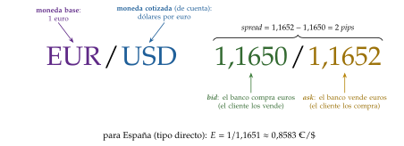
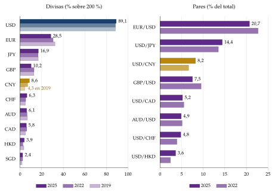
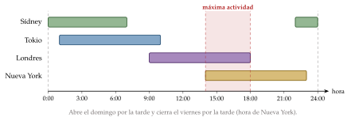
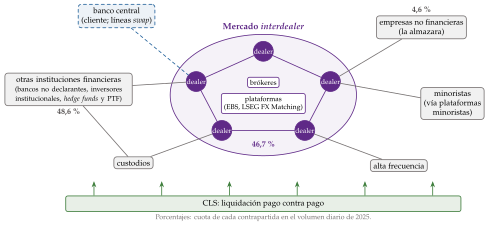
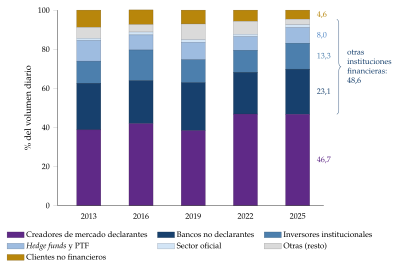
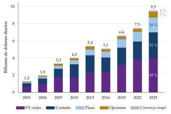
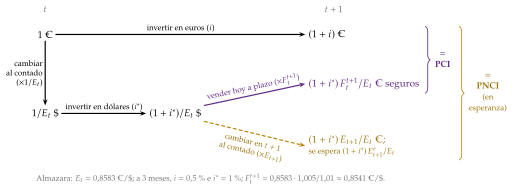
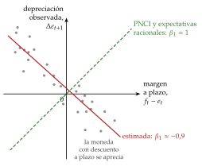
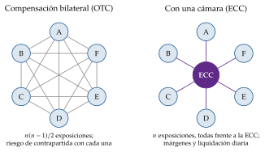

Tema 3.B.13
Mercados de divisas: operaciones e instrumentos.
Tipo de cambio, bid-ask, agentes, contado, forward, FX swaps y opciones; arbitraje y paridad cubierta, paridad no cubierta, carry trade y paradoja del forward.
Exclusivo Material exclusivo de victorgutierrezmarcos.es y la app Oposición TCEE · DCE. Puedes usarlo libremente para tu estudio personal. No se autoriza su incorporación a otras plataformas, aplicaciones o servicios. Condiciones de uso.
Introducción
Enganche:
«Quien no arriesga, no gana», dice el refrán. En el mercado de divisas se fija el precio que, para Paul Volcker, es probablemente el más importante de una economía, porque influye en todos los demás: en los precios, en las exportaciones y las importaciones y en la actividad (Volcker y Gyohten, 1992).1
En abril de 2025, el mes de los anuncios arancelarios de Estados Unidos, ese precio se movió como pocas veces: el dólar, que en las crisis suele subir, perdió un 3,3 % frente a una cesta amplia de monedas en solo un mes (Board of Governors of the Federal Reserve System, 2026b), y el euro pasó de 1,08 a 1,14 dólares (Banco Central Europeo, 2026d). Ese mismo mes el mercado de divisas batió su récord: 9,5 billones de dólares diarios, un 27 % más que en 2022 (Bank for International Settlements, 2026; Huang, Krohn y Sushko, 2025). En menos de 4 días mueve lo que el comercio mundial de bienes y servicios en todo un año (Organización Mundial del Comercio, 2026).
¿Qué es ese mercado, quién opera en él, con qué instrumentos y para qué? ¿Y fija bien el precio más importante de la economía: deja ganar sin arriesgar, o al menos adivina el tipo de cambio de mañana?
Relevancia:
En el mercado de divisas se forma el tipo de cambio, el precio de una moneda en términos de otra, que conecta los precios de todos los países.
En lo microeconómico, decide la rentabilidad de exportar, importar o invertir fuera y el riesgo que asumen empresas, bancos e inversores; con él se asignan los recursos entre los sectores que comercian con el exterior y los que no.
En lo macroeconómico, el tipo de cambio:
es un canal de transmisión de la política monetaria: una política expansiva tiende a depreciar la moneda, lo que mejora la competitividad-precio y, al encarecer las importaciones, puede elevar la inflación;
puede ser un instrumento o un objetivo de la política económica, si la autoridad monetaria interviene en el mercado para moverlo o para fijarlo;
y sus movimientos bruscos afectan a la inflación, a la competitividad y a la estabilidad financiera, sobre todo cuando empresas, bancos o Estados están endeudados en otra moneda.2
Contextualización:
Histórica: la evolución del mercado de divisas va ligada a la del sistema monetario internacional.
Con el sistema de Bretton Woods (1944-1973),3 el dólar se consolidó como moneda de reserva y ancla del sistema. En el mercado operaban sobre todo los comerciantes, cuyas transacciones crecían con el comercio internacional, y los bancos centrales, que intervenían para mantener las paridades fijas [ver tema 3.B.20].
La integración financiera, la liberalización de los capitales y la creciente interdependencia de las economías agravaron los defectos de diseño del sistema, que se rompió en 1973. Desde entonces, con tipos flexibles entre las grandes monedas, lo que John Williamson llamó el «no sistema» monetario internacional, el crecimiento de los flujos financieros ha disparado el tamaño del mercado [ver tema 3.B.21].
Estadística: desde 1986, los bancos centrales, coordinados por el Banco de Pagos Internacionales (BPI; BIS en inglés), miden el mercado cada 3 años con la Encuesta Trienal. La última, la de abril de 2025, abarcó 52 jurisdicciones y más de 1.100 bancos y dealers (Bank for International Settlements, 2025); es la fuente de casi todos los datos de esta exposición.
Reciente: tras la crisis de 2008 han cambiado 3 cosas. El arbitraje de intereses dejó de cumplirse con exactitud; la regulación llevó a cámaras de contrapartida muchos derivados, pero casi nada de divisas; y los escándalos de manipulación de los tipos de referencia dieron lugar a un código de conducta común.
Problemática:
¿Qué es el mercado de divisas, cómo se cotiza el tipo de cambio y quién opera en él?
¿Qué instrumentos se negocian y para qué operaciones se usan?
¿Qué relación imponen el arbitraje y la especulación entre los tipos de interés y los tipos de cambio?
¿Es un mercado eficiente? Y si arbitra tan bien, ¿por qué el tipo a plazo predice tan mal el de contado?
Estructura:
La exposición va de lo que es el mercado a lo que se hace en él y, por último, a si fija bien el precio.
En el bloque I, qué es el mercado de divisas: los conceptos y las convenciones con que se cotiza, sus rasgos (el mayor del mundo, concentrado, abierto las 24 horas, extrabursátil y con un riesgo de liquidación propio) y quién opera en él.
En el bloque II, los instrumentos con que se negocia y las operaciones para las que se usan. Se estudian antes los instrumentos, aunque el título nombre primero las operaciones, porque cada operación se hace con ellos. Las de arbitraje y especulación dan las 2 relaciones que ordenan el mercado: la paridad cubierta y la no cubierta de intereses.
En el bloque III, si el mercado es eficiente: arbitra casi a la perfección, pero el tipo a plazo predice mal el de contado futuro (la paradoja del margen forward).
3.B.13. Mercados de divisas: operaciones e instrumentos
Introducción2′30″
I. Caracterización general del mercado de divisas9′
1. Conceptos básicos: divisa, mercado de divisas y tipo de cambio
2. Convenciones en los tipos de cambio
3. Características: tamaño, concentración, 24 horas, OTC y liquidación, tecnología y Código Global
4. Agentes
II. Instrumentos y operaciones12′30″
1. Instrumentos: spot, forward, NDF y futuros, FX swaps, currency swaps y opciones
2. Operaciones: comerciales, de liquidez, de cobertura, de reservas, de arbitraje (PCI) y de especulación (PNCI)
III. Eficiencia en el mercado de divisas5′
1. Definiciones de eficiencia
2. ¿Es eficiente el mercado de divisas?
3. La paradoja del margen forward
Conclusión1′
Reparto del cante: introducción, 2′30″; I, 9′ (I.1, 1′; I.2, 2′30″; I.3, 3′; I.4, 2′30″); II, 12′30″ (II.1, 3′30″; II.2, 9′: comerciales, 1′30″, liquidez, 1′, cobertura, 0′45″, reservas, 0′45″, arbitraje y PCI, 3′, y especulación y PNCI, 2′); III, 5′ (III.1, 0′45″; III.2, 1′15″; III.3, 3′), y conclusión, 1′. Las 2 paridades son el modelo de referencia del tema y se llevan la mitad del bloque II. La introducción y la conclusión llevan el refrán del enganche, «quien no arriesga, no gana», y la cifra de «9,5 billones de dólares al día»: el refrán vuelve en la idea final. El esquema de los 3 bloques acompaña todo el tema. En el bloque I, el par de divisas con la cotización de la almazara del ejemplo, el recuadro con \(q\) y \(E^{ef}\) y el esquema de dos niveles de los agentes. En el bloque II, la tabla de instrumentos, la oferta y la demanda de divisas y el gráfico de los 2 caminos del inversor, primero con la PCI y después con la PNCI; las 2 ecuaciones son la función clave hasta el final. En el bloque III, la tabla de los 3 sentidos de la eficiencia y la recta de la paradoja del margen forward. Las pegatinas van junto a su concepto: «camarón que se duerme, se lo lleva la corriente» (24 horas y latencia), «ande yo caliente, y ríase la gente» (cobertura), «lo que no puede ser no puede ser, y además es imposible» (PCI), «sube por la escalera y baja en ascensor» (carry trade) y «en todas partes cuecen habas» (paradoja). Las notas al pie, las cajas grises y los anexos son para las preguntas del tribunal.
I. Caracterización general del mercado de divisas
En el cante (9′): I.1, 1′, de palabra, con la almazara presentada en una frase. I.2, 2′30″: el par EUR/USD con la cotización de la almazara (gráfico 1), dibujado a mano; debajo, el recuadro con \(q=EP^{*}/P\) (2) y \(E^{ef}=\prod_iE_i^{\omega_i}\), que se queda. Las convenciones se dicen deprisa pero sin errores de signo: el tribunal pregunta por la cotización directa e indirecta, así que conviene decir la convención del tema en voz alta al empezar. I.3, 3′: las 6 características en lista, con las cifras de 2025, la pegatina «camarón que se duerme, se lo lleva la corriente» junto a las 24 horas y un mini esquema del riesgo de Herstatt (2 flechas con desfase horario y CLS en medio). I.4, 2′30″: el esquema de dos niveles (gráfico 4). Los gráficos de datos se dicen, no se dibujan.
Conclusión anticipada: el mercado de divisas no es un lugar, sino una red de bancos y plataformas en la que se compran y venden monedas. Es el mayor mercado financiero del mundo, extrabursátil, organizado alrededor de unos pocos bancos creadores de mercado, abierto las 24 horas y concentrado en el dólar y en Londres; casi todo lo que se negocia en él son operaciones financieras, no comerciales.
Nexo: antes de ver qué se hace en el mercado, hay que fijar el vocabulario: qué es una divisa, cómo se cotiza su precio, qué rasgos tiene el mercado y quién opera en él.
I.1. Conceptos básicos: divisa, mercado de divisas y tipo de cambio
Una divisa es un medio de pago denominado en una moneda extranjera, en manos de los residentes de un país, y aceptado en las transacciones internacionales.4 La palabra se usa en 2 sentidos:
amplio: cualquier moneda extranjera, sea cual sea su forma;
estricto, el de la práctica bancaria: los saldos a la vista en moneda extranjera y los instrumentos para disponer de ellos (transferencias, cheques, tarjetas). Los billetes y monedas extranjeros se tratan aparte, como «billetes». El mercado de divisas al por mayor negocia casi solo saldos bancarios.
No son divisas los instrumentos de crédito (letras de cambio o pagarés emitidos por no residentes) ni los activos financieros (acciones, bonos), aunque estén denominados en moneda extranjera.
Una divisa es convertible si se puede cambiar libremente por otras, sin restricciones a los pagos ni controles de cambios; si no, es no convertible. El Fondo Monetario Internacional (FMI) llama moneda de libre uso a la que, de hecho, se usa mucho para pagar transacciones internacionales y se negocia mucho en los principales mercados de divisas (Fondo Monetario Internacional, s. f., art. xxx, letra f). Es la condición para entrar en la cesta del derecho especial de giro (DEG), que hoy forman el dólar (43,38 %), el euro (29,31 %), el renminbi (12,28 %), el yen (7,59 %) y la libra (7,44 %) (Fondo Monetario Internacional, 2022) [ver tema 3.B.22]. No es lo mismo que convertible: el renminbi es de libre uso desde 2016 aunque China mantiene controles de capital.5
El mercado de divisas es el marco en el que se compran y venden divisas a cambio de otras: la infraestructura y las instituciones con que agentes de todo el mundo las negocian.
Como cualquier mercado de la teoría económica, no es un lugar físico: es una red de bancos, brókeres, plataformas electrónicas y otros agentes autorizados, a los que acuden empresas, inversores y bancos centrales.
Es internacional, aunque se hable de las plazas (Londres, Nueva York, Singapur, Hong Kong, Tokio, Zúrich, Fráncfort…) en las que cotizan los tipos de cambio.
Cumple 3 funciones:
transferir poder adquisitivo de una moneda a otra, y con él de un país a otro;
financiar el comercio internacional con crédito a corto plazo en divisas, mientras las mercancías están en tránsito;
facilitar la cobertura del riesgo de cambio con los instrumentos a plazo (II.2.3).
El tipo de cambio es el precio de una divisa en términos de otra.
Para seguir la exposición tomemos una almazara de Jaén que vende aceite a un importador de Estados Unidos y cobrará 1 millón de dólares dentro de 3 meses. Necesitará euros para pagar a sus olivareros, así que tendrá que vender dólares en el mercado de divisas. Las cifras del ejemplo son ilustrativas, redondas, no datos.
I.2. Convenciones en los tipos de cambio
Notación. \(E_t\) es el tipo de cambio nominal directo al contado (euros por dólar para España; \(\uparrow E\) = depreciación del euro), \(F_t^{t+1}\) el tipo a plazo pactado en \(t\) para \(t+1\) y \(E^e_{t+1}\) el tipo de contado que se espera en \(t\) para \(t+1\), con \(\gamma E^e\equiv(E^e_{t+1}-E_t)/E_t\) la depreciación esperada; \(i\) e \(i^{*}\) son los tipos de interés nacional y extranjero al mismo plazo; las minúsculas \(e\) y \(f\) son los logaritmos de \(E\) y \(F\). \(q=EP^{*}/P\) es el tipo de cambio real y \(E^{ef}\), \(q^{ef}\) los efectivos, con pesos \(\omega_i\). \(E^{\mathrm{bid}}\) y \(E^{\mathrm{ask}}\) son los precios de compra y de venta del creador de mercado, y \(\rho\) la prima de riesgo cambiaria. En la notación de los derivados [ver tema 3.B.25], \(S_0\equiv E_t\) y \(F_0\equiv F_t^{t+1}\).
a) Códigos de divisas y pares
Códigos: cada divisa tiene un código de 3 letras, el de la norma ISO 4217. Casi siempre las 2 primeras letras indican el país y la tercera la moneda: USD (dólar estadounidense), EUR, JPY (yen), GBP (libra esterlina), CNY (renminbi), CHF (franco suizo), CAD, AUD y NZD (dólares canadiense, australiano y neozelandés).
Pares: el tipo de cambio se cotiza como un par «BASE/COTIZADA»: la cotización del par EUR/USD dice cuántas unidades de la moneda cotizada o de cuenta (aquí, el dólar; quote currency) hacen falta para comprar 1 unidad de la moneda base (aquí, el euro; base currency) (gráfico 1).
Siguiendo con nuestra almazara, su banco le cotiza el par EUR/USD a 1,1650/1,1652: el euro es la moneda base y el dólar la cotizada, y 1 euro vale algo más de 1,165 dólares.
Clasificación de los pares, en la jerga del mercado:
pares mayores (majors): los del dólar con el euro, el yen, la libra, el franco suizo y los dólares canadiense, australiano y neozelandés. El renminbi es ya la 5.ª moneda más negociada (I.3), pero no suele contarse entre los majors porque su convertibilidad sigue limitada: cotiza en China (CNY) y fuera de China (CNH) a tipos distintos;
pares cruzados (crosses o minors): los de 2 monedas principales sin el dólar, como EUR/GBP o EUR/JPY. Muchos se forman a través del dólar: primero se negocia una moneda contra el dólar y luego el dólar contra la otra;6
pares exóticos: una moneda principal con la de una economía pequeña o emergente; tienen menos liquidez y spreads más amplios.

Fuente: elaboración propia; cotización ilustrativa. Otra explicación de cómo se lee un par, en el curso de introducción a los mercados de FOREX.com.
b) Bid, ask y spread
Quien cotiza un par da 2 precios:
el precio bid (de compra), \(E^{\mathrm{bid}}\), al que el creador de mercado compra la moneda base: el cliente vende a ese precio;
el precio ask u offer (de venta), \(E^{\mathrm{ask}}\), al que el creador de mercado la vende: el cliente compra a ese precio.
Siempre \(E^{\mathrm{bid}}<E^{\mathrm{ask}}\), y la diferencia es el spread, \(E^{\mathrm{ask}}-E^{\mathrm{bid}}\).
En un mercado de creadores de mercado como el de divisas, la operación no espera a que los 2 precios se igualen: el cliente que acepta la cotización opera en el acto, comprando al ask o vendiendo al bid. El spread es lo que cobra el creador de mercado por dar liquidez y por el riesgo de quedarse con la posición; con estos volúmenes, no suele cobrar comisiones aparte.
Volvamos a la almazara: con la cotización EUR/USD 1,1650/1,1652, el banco compra euros a 1,1650 dólares y los vende a 1,1652. La almazara, que tiene dólares y quiere euros, compra euros al ask: si cambiara hoy su millón de dólares, recibiría \(1.000.000/1{,}1652\approx858.200\) euros, unos 70 euros menos que al precio medio. Esa diferencia es lo que le cuesta el spread.
En los libros de órdenes de las plataformas electrónicas, en cambio, sí se cruzan órdenes: la operación se cierra cuando una orden de compra alcanza el precio de una de venta.
El spread depende sobre todo de la liquidez del par: cuanto más líquido, más estrecho. Por eso varía entre pares, y en un mismo par según el día y la hora.
c) Pips y ticks
Un pip es la unidad convencional en que se miden las variaciones de un par: el cuarto decimal en casi todos (0,0001) y el segundo en los pares con el yen (0,01). Las plataformas cotizan hoy con un decimal más, la pipette o fracción de pip.7 En el ejemplo, el spread de la almazara es de 2 pips.
El tick es la variación mínima del precio de cualquier instrumento financiero, un término que viene de los mercados de futuros. La distinción con el pip es sutil: para unos es solo de ámbito (pip en divisas, tick en los demás mercados); para otros, el pip es la variación posible y el tick la que efectivamente se produce.
d) Cotización directa e indirecta
En la cotización directa (o de precio), la moneda cotizada es la nacional: el tipo de cambio dice cuántas unidades de moneda nacional cuesta 1 unidad de divisa, el precio de la divisa. En la cotización indirecta (o de volumen), la moneda cotizada es la extranjera: cuántas unidades de divisa se obtienen con 1 unidad de moneda nacional.
En esta exposición, \(E\) es siempre el tipo directo: un aumento, \(\uparrow E\), es una depreciación de la moneda nacional, porque hace falta más moneda nacional para comprar 1 unidad de divisa.8
El par EUR/USD, que dice cuántos dólares vale 1 euro, es una cotización indirecta para España. El tipo directo de la almazara es su inversa: al precio medio, \(E=1/1{,}1651\approx0{,}8583\) euros por dólar.
e) Tipos de cambio nominal y real, bilateral y efectivo
Tipo de cambio nominal bilateral, \(E\): el precio de una divisa en unidades de la moneda nacional.
Tipo de cambio efectivo nominal, \(E^{ef}\): el precio de una cesta de divisas de los socios comerciales en moneda nacional (en esta convención, \(\uparrow E^{ef}\) = depreciación efectiva). Es una media geométrica de los tipos bilaterales, ponderada por el peso de cada socio en el comercio: \[\tag{1} E^{ef}=\prod_{i=1}^{n}E_i^{\,\omega_i},\qquad \sum_{i=1}^{n}\omega_i=1 .\] Se usa la media geométrica porque así el índice no depende de la base ni de la convención de cotización, y una apreciación y una depreciación de la misma proporción (multiplicar por 1,1 y dividir por 1,1) se compensan.9
Tipo de cambio real bilateral, \(q\): el precio relativo de los bienes extranjeros en términos de los nacionales, es decir, cuántas unidades del bien nacional hay que entregar por una del extranjero:
\[q=\frac{E\,P^{*}}{P}\tag{2}\]
donde \(P\) y \(P^{*}\) son los niveles de precios nacional y extranjero. \(\uparrow q\) es una depreciación real: los bienes nacionales se abaratan frente a los extranjeros y el país gana competitividad-precio.
Tipo de cambio efectivo real, \(q^{ef}\): el real frente a la cesta de socios, \[\tag{3} q^{ef}=\prod_{i=1}^{n}\left(\frac{E_i\,P^{*}_i}{P}\right)^{\omega_i}.\] Al recoger los tipos nominales y los precios relativos frente a todos los socios, es el mejor indicador de la competitividad-precio de una economía; si se deflacta con costes laborales unitarios en vez de con precios, mide la competitividad en costes [ver tema 4.A.22].
Aviso al pasar a los datos: el BCE y el Banco de España publican los tipos efectivos en la convención contraria a la de esta exposición: una subida es una apreciación del euro y una pérdida de competitividad. El BCE los calcula frente a 12, 17 y 40 socios; el efectivo nominal frente a 17 estaba en 98,2 (primer trimestre de 1999 = 100) en octubre de 2026, un 3,6 % por debajo de un año antes, es decir, el euro se había depreciado (Banco Central Europeo, 2026b). Hay que decir siempre en qué convención se lee el dato [ver tema 4.A.22].
I.3. Características del mercado de divisas
Como el mercado está cada vez más atomizado, lo que mejor lo distingue de otros mercados financieros son 6 rasgos: su tamaño, su concentración, su horario, su organización extrabursátil (con un riesgo de liquidación propio), el peso de la tecnología y una regulación que descansa sobre todo en la autorregulación.
a) Es el mercado más grande del mundo
Desde la Segunda Guerra Mundial, el aumento de los flujos internacionales de bienes, servicios y capitales multiplicó la necesidad de cambiar unas monedas por otras. Hoy el de divisas es el mercado financiero más grande del mundo.
En abril de 2025 se negociaron de media 9,5 billones de dólares al día, un 27 % más que en abril de 2022 (Bank for International Settlements, 2026). Fue un mes excepcional: el BPI atribuye unos 1,5 billones diarios a la reacción a los anuncios arancelarios de Estados Unidos y a la cobertura del riesgo del dólar (Huang, Krohn y Sushko, 2025).
Para hacerse una idea: el comercio mundial de bienes y servicios sumó 34,65 billones de dólares en 2025 (Organización Mundial del Comercio, 2026), de modo que el mercado de divisas negocia en menos de 4 días lo que el comercio mueve en un año.10
Lo mueven las finanzas, no el comercio: las operaciones con clientes no financieros, como exportadores e importadores, son menos del 5 % del volumen (4,6 % en 2025, frente al 13,4 % de 2010) (Bank for International Settlements, 2026). Casi todo lo demás es gestión de liquidez, cobertura de carteras, arbitraje y especulación.
En España se negociaron 67.900 millones de dólares diarios, un 73 % más que en 2022, el 0,5 % del total mundial (Banco de España, 2025).
b) Es un mercado muy concentrado
En divisas: como cada operación tiene 2 monedas, las cuotas suman el 200 % (gráfico 2) (Bank for International Settlements, 2026):
el dólar está en uno de los lados del 89,1 % de las operaciones (88,4 % en 2022): es la moneda vehicular y el activo líquido y seguro por excelencia, y su demanda sube en las crisis (flight to safety);
el euro, en el 28,5 %, y sigue perdiendo peso (30,6 % en 2022 y 32,3 % en 2019). La UE quiere reforzar su papel internacional: en 2018, cuando más del 80 % de sus importaciones de energía se pagaban en dólares, la Comisión propuso fomentar el euro en esos contratos (Comisión Europea, 2018) [ver tema 3.B.43];
el yen, en el 16,9 %, sin apenas cambios;
la libra, en el 10,2 % (12,9 % en 2022);
el renminbi, en el 8,6 %, casi el doble que en 2019 (4,3 %); el par dólar-renminbi es ya el 8,2 % del mercado.
Los 10 pares más negociados llevan todos el dólar; el primero es el EUR/USD, con el 20,7 % del volumen.
Geográficamente: 4 plazas, Londres, Nueva York, Singapur y Hong Kong, intermedian tres cuartas partes del mercado. El Reino Unido sigue a la cabeza, con el 37,8 % (su máximo fue el 43,2 % de 2019), seguido de Estados Unidos (18,6 %), Singapur, la que más crece (11,8 %), y Hong Kong (7 %); con Japón (3,5 %), los 5 primeros centros suman el 78,7 % (Bank for International Settlements, 2026).

Fuente: BPI, Encuesta Trienal de 2025, datos definitivos (Bank for International Settlements, 2026). Cuotas en el volumen medio diario; las de las divisas suman el 200 %.
¿Rival para el dólar? Wei (2023) sostiene que, pese a sus avances, el renminbi está lejos de ser una moneda de reserva mundial y que no amenazará la hegemonía del dólar mientras China no liberalice mucho más su cuenta de capital; una moneda digital podría servir para liberalizarla en parte, pero eso no bastaría. Los datos le dan la razón: el renminbi gana peso en la negociación, pero en las reservas de los bancos centrales apenas llega al 2 % (II.2.4).
c) Es un mercado abierto las 24 horas
A diferencia de las bolsas, no tiene horario de apertura y cierre: gracias a los husos horarios de los principales centros financieros, siempre hay alguno abierto. En la práctica, funciona sin interrupción desde la tarde del domingo hasta la del viernes, hora de Nueva York, con las sesiones de Sídney, Tokio, Londres y Nueva York encadenadas; la de más actividad es la tarde europea, cuando coinciden Londres y Nueva York (gráfico 3).
«Camarón que se duerme, se lo lleva la corriente»: en un mercado que no cierra, el precio se mueve mientras unos duermen, y hoy lo hace a la velocidad de los algoritmos (II.2.5).

Fuente: elaboración propia; horarios aproximados de las sesiones, en horario de invierno. Los horarios de las principales bolsas, en Stumpf Guirao y Arévalo (2016).
d) Es un mercado extrabursátil: negociación, compensación y liquidación
Una operación de divisas pasa por 3 etapas:
negociación: las partes se ponen en contacto, se descubre el precio y se acuerdan precio y cantidad;
compensación: se confirman las operaciones y se calculan las obligaciones de cada parte, operación a operación o en neto;
liquidación: se hacen los pagos en las 2 monedas.
El mercado de divisas es extrabursátil (OTC, over the counter) en la negociación: no hay un mercado organizado con un contrato tipo, sino acuerdos bilaterales o en plataformas electrónicas.
Ventaja: flexibilidad; el contrato se adapta a lo que necesita cada parte.
Inconvenientes: riesgo de contraparte, menos transparencia y menos requisitos para operar que en un mercado organizado.
Compensación: es casi siempre bilateral, no en una entidad de contrapartida central (ECC).11 Tras la crisis de 2008, el G-20 acordó llevar a ECC los derivados OTC normalizados (G20, 2009), pero las divisas quedaron casi fuera:
en la UE, el Reglamento de infraestructuras de mercado (EMIR) obliga a compensar en una ECC solo las clases de derivados que decide la Autoridad Europea de Valores y Mercados (ESMA), y ninguna es de divisas: en 2015 estudió los forwards sin entrega y decidió no imponerla (Parlamento Europeo y Consejo de la Unión Europea, 2012; European Securities and Markets Authority, 2015). El Reglamento MiFIR, por su parte, obliga a negociar en plataformas algunos derivados (Parlamento Europeo y Consejo de la Unión Europea, 2014b) [ver tema 3.B.25];
en Estados Unidos, la ley Dodd-Frank (2010) permitió al Tesoro excluir de la definición de swap a los FX swaps y a los forwards con entrega, lo que hizo en noviembre de 2012: quedaron fuera de la compensación y de la negociación obligatorias, aunque no de la obligación de comunicarlos (Congreso de los Estados Unidos, 2010; Departamento del Tesoro de los Estados Unidos, 2012). Las opciones, los currency swaps y los forwards sin entrega sí son swaps a esos efectos; el contado nunca lo fue.
Liquidación: una compraventa de divisas se liquida con 2 pagos, uno en cada moneda, en 2 sistemas de pago nacionales que pueden estar abiertos a horas distintas. Si una parte paga y la otra quiebra antes de pagar, la primera pierde todo el principal, no solo la diferencia de precio: es el riesgo de liquidación o riesgo de Herstatt.
El nombre viene del Bankhaus Herstatt, un banco alemán que las autoridades cerraron a media tarde del 26 de junio de 1974, cuando ya había cobrado marcos de sus contrapartes y aún no había pagado los dólares que les debía en Nueva York (Committee on Payment and Settlement Systems, 1996; Bank for International Settlements, 2019). Ese mismo año se creó el Comité de Supervisión Bancaria de Basilea [ver tema 3.B.27].
La respuesta: el pago contra pago (PvP, payment versus payment), que liquida las 2 partes a la vez o ninguna. Lo ofrece desde 2002 CLS, una entidad creada por los grandes bancos que hoy liquida en 18 monedas, con más de 75 miembros (CLS Group, 2026).
Lo que queda: en abril de 2025 solo el 36 % de los pagos se liquidó con PvP; el 54 % se liquidó con otros métodos que reducen el riesgo (compensación en neto u operaciones dentro de un mismo grupo), y un 10 %, unos 1,4 billones de dólares diarios, seguía plenamente expuesto, sobre todo en monedas fuera de CLS y en operaciones con clientes (Drehmann et al., 2026).
Siguiendo con la almazara: cuando su banco venda los dólares que cobre, CLS le asegura que no entregará los dólares sin recibir a la vez los euros.
e) Es un mercado transformado por la tecnología
Ocurre en todos los mercados financieros, pero en el de divisas se ve en 3 efectos:
spreads más estrechos;
más transparencia: cualquiera puede seguir el mercado en tiempo real sin depender de la información de los dealers;
más eficiencia operativa: todas las etapas de la operación se hacen electrónicamente, sin papeleo y casi sin intervención humana.
Las plataformas electrónicas son de 2 tipos: las interbancarias, con libro de órdenes entre creadores de mercado (EBS y LSEG FX Matching, antes Reuters Matching), y las de clientes, de un solo banco o de varios, en las que el cliente pide precio a varios bancos a la vez. Los terminales de información, como LSEG Workspace (antes Eikon) o Bloomberg, dan precios y noticias, pero no son plataformas de negociación minorista (Markets Committee, 2020).
La tecnología ha traído también los algoritmos de ejecución y la negociación de alta frecuencia (I.4.2), con sus ventajas y sus riesgos (II.2.5).
f) Se rige sobre todo por la autorregulación
El contado de divisas no es un instrumento financiero a efectos de la normativa europea de mercados de valores (MiFID II), que solo alcanza a los derivados sobre divisas (Parlamento Europeo y Consejo de la Unión Europea, 2014a), y el mercado no tiene un supervisor propio: lo ordenan los bancos centrales, sus comités y un código voluntario.
El 12 de noviembre de 2014, los supervisores británico y estadounidense multaron a 5 grandes bancos, con más de 1.100 millones de libras y más de 1.400 millones de dólares, por intentar manipular entre 2008 y 2013 los fixings, los tipos de referencia que se calculan a las 4 de la tarde de Londres con las operaciones de unos minutos (Financial Conduct Authority, 2014; Commodity Futures Trading Commission, 2014).
En respuesta, bancos centrales y participantes privados publicaron el 25 de mayo de 2017 el Código Global de Conducta del Mercado de Divisas (FX Global Code) (Bank for International Settlements, 2017):
55 principios de buenas prácticas en 6 áreas: ética, gobernanza, ejecución, intercambio de información, gestión de riesgos y cumplimiento, y confirmación y liquidación;
no es una norma legal: los participantes se adhieren y declaran que lo cumplen;
lo mantiene el Comité Global de Divisas (GFXC), que lo revisó en julio de 2021 y en diciembre de 2024, esta vez sobre todo para reforzar la gestión del riesgo de liquidación (Global Foreign Exchange Committee, 2021, 2025);
uno de sus principios, el 17, regula el last look: el plazo de milisegundos que se reserva el creador de mercado para aceptar o rechazar una orden al precio que cotizó, que solo puede usar para comprobar el precio y la validez de la operación, no para operar con esa información (Global Foreign Exchange Committee, 2024) (II.2.5).
I.4. Agentes
Clasificar a los agentes por lo que ofrecen y demandan no es fácil: en cada operación se ofrece una divisa y se demanda otra, y el mercado está cada vez más atomizado. Por eso se clasifican por su papel y por la información de que disponen, como hacen King, Osler y Rime (2012):
en el centro, los creadores de mercado, que dan liquidez;
alrededor, un grupo heterogéneo de usuarios que se sirven de esa liquidez;
entre unos y otros, los brókeres y las plataformas;
y, aparte, los bancos centrales.
El mercado tiene así 2 niveles (gráfico 4): el interdealer, entre creadores de mercado, y el de los clientes con sus creadores de mercado.

Fuente: elaboración propia a partir de King, Osler y Rime (2012).
I.4.1. Agentes que proveen liquidez
a) Creadores de mercado (dealers o market makers)
Son grandes bancos (bancos de inversión o universales, casi todos de importancia sistémica mundial en la terminología del Consejo de Estabilidad Financiera) siempre dispuestos a comprar y a vender: cotizan a cualquiera, en cualquier momento, un precio de compra (bid) y otro de venta (ask).
Son los principales proveedores de liquidez del mercado y ganan con el spread, la compensación por el servicio de liquidez y por el riesgo de quedarse con la posición.12
Son los agentes mejor informados: ven el flujo de órdenes de muchos clientes, y sus órdenes anticipan los movimientos del tipo de cambio.
El mercado interdealer: tras operar con un cliente, el creador de mercado prefiere no quedarse con inventario y lo traspasa a otros creadores de mercado, que a su vez hacen lo mismo (hot potato trading).13
Supone el 46,7 % del volumen, el mismo peso que en 2022 (46,8 %) y bastante más que entre 2010 y 2019, cuando osciló entre el 38 y el 42 % (Bank for International Settlements, 2026).
La tecnología permite hoy gestionar el inventario con menos operaciones, y la regulación de Basilea III, que exige capital por el riesgo de mercado, encarece que los bancos mantengan posiciones: un efecto colateral es una menor liquidez en los momentos de tensión [ver tema 3.B.27].
b) Bancos custodios
Los grandes gestores de activos contratan a bancos custodios que guardan sus valores, calculan el valor de las carteras y cobran dividendos, cupones e intereses.14 Cuando necesitan cambiar divisas, suelen hacerlo con su custodio y no con los grandes bancos, porque les reduce costes y papeleo.
El custodio les da liquidez y cobra un pequeño recargo (mark-up) sobre el precio que paga a un creador de mercado: un papel parecido al de un bróker.
c) Plataformas de operadores minoristas (retail aggregators)
Operan solo en internet: agrupan las pequeñas órdenes de los inversores minoristas en operaciones grandes con las que negocian con los creadores de mercado.
Unas solo hacen de bróker, casando las órdenes de los minoristas con las cotizaciones de los bancos; otras, además, actúan como contraparte de sus clientes, como un creador de mercado.
I.4.2. Agentes que necesitan liquidez
Desde 1990 ha crecido el peso de las instituciones financieras no bancarias y ha caído el de las empresas no financieras; en la última década han llegado los operadores minoristas y los algorítmicos (gráfico 5).
a) Otras instituciones financieras
Son todas las que no son creadores de mercado declarantes en la Encuesta: el 48,6 % del volumen en 2025 (Bank for International Settlements, 2026). Por su volumen, suelen estar mejor informadas que las empresas no financieras:
bancos que no son creadores de mercado (23,1 %): bancos regionales y pequeños que cubren las operaciones de sus clientes;
inversores institucionales (13,3 %): fondos de pensiones, aseguradoras y fondos de inversión, que invierten en otras divisas y cubren el riesgo de cambio de sus carteras;
fondos de inversión libre (hedge funds) y sociedades de negociación por cuenta propia (8 %), entre ellas las de alta frecuencia. Son los que más se apalancan y especulan, y los que tienen más incentivos para estar informados, porque sus gestores cobran según la rentabilidad. No buscan ganar con el spread, sino con los movimientos del tipo de cambio.15
sector oficial (1,4 %): bancos centrales, fondos soberanos y organismos internacionales, que operan como clientes de los creadores de mercado (I.4.4).
y otras (2,9 %), las instituciones financieras que la Encuesta no clasifica en los grupos anteriores.
b) Sociedades no financieras
Pesan poco, el 4,6 % del volumen (Bank for International Settlements, 2026), y hacen 2 tipos de operaciones:
comerciales: cobran sus exportaciones y pagan sus importaciones, como nuestra almazara;
de cobertura del riesgo de cambio de esos flujos.
No suelen especular: un departamento que lo haga es caro y arriesgado (el riesgo de que un solo operador, un rogue trader, lleve a la quiebra a la empresa).
c) Inversores minoristas
Especulan o invierten con importes pequeños, casi siempre a través de plataformas minoristas, al contado y en las monedas principales, aunque cada vez más en las de economías emergentes. Las operaciones que generan suponen el 2,5 % del volumen (Bank for International Settlements, 2026).
Se apalancan mucho, así que deberían tener fuertes incentivos a informarse. Pero la evidencia muestra que sus operaciones no anticipan el tipo de cambio y no suelen ganar: las finanzas conductuales lo explican por el exceso de confianza [ver tema 3.B.23] [ver tema 3.A.1].
En mucha menor medida, compran divisas para gastarlas (el turista en el aeropuerto), una fracción insignificante del mercado.
d) Operadores algorítmicos y de alta frecuencia
En la negociación algorítmica, un programa decide y ejecuta las órdenes sin intervención humana, salvo para programarlo y vigilarlo. Los programas más rápidos hacen muchas operaciones en milisegundos: es la negociación de alta frecuencia (HFT, high-frequency trading).
Ejecutan estrategias de arbitraje y de especulación de muy corto plazo, en las que la velocidad lo es todo: por eso instalan sus servidores lo más cerca posible de los de las plataformas (colocation).16

Fuente: BPI, Encuesta Trienal, datos definitivos de 2025 (Bank for International Settlements, 2026). Porcentaje del volumen medio diario de abril.
I.4.3. Brókeres
Son intermediarios entre los creadores de mercado y los demás agentes, y facilitan el acceso al mercado: los creadores de mercado les hacen llegar sus precios de compra y de venta, y los brókeres eligen los mejores y se los ofrecen a sus clientes. Así, inversores pequeños consiguen precios a los que no llegarían solos.
Cobran una comisión por el servicio y están muy concentrados en Londres.
Una forma moderna es el prime brokerage: un gran banco deja que un fondo o un banco pequeño opere en su nombre y asume el riesgo de contraparte frente al mercado. Una de cada 5 operaciones, el 22,7 % del volumen, se hace así (Bank for International Settlements, 2026).
I.4.4. Bancos centrales
Sus operaciones influyen en el tipo de cambio: la gestión de las reservas internacionales, la intervención para moverlo o para fijarlo y su propia política monetaria [ver tema 3.B.15].
No son creadores de mercado: cuando intervienen o gestionan sus reservas, operan como clientes de los dealers. En la Encuesta, el sector oficial supone el 1,4 % del volumen (Bank for International Settlements, 2026).
Los que emiten las monedas de reserva, sobre todo la Reserva Federal, dan además liquidez en su moneda a otros bancos centrales con las líneas swap, que tienen la estructura de un FX swap (II.2.2).
Recapitulación del bloque I: el tipo de cambio es el precio de una divisa en otra; en esta exposición, directo (\(\uparrow E\) = depreciación), y su versión real, \(q=EP^{*}/P\), mide la competitividad-precio. El mercado en que se forma es el mayor del mundo, financiero más que comercial, concentrado en el dólar y en Londres, abierto las 24 horas, extrabursátil, con un riesgo de liquidación propio y regulado sobre todo por un código voluntario. Lo sostienen unos pocos creadores de mercado, alrededor de los cuales operan financieras, empresas, minoristas, algoritmos y bancos centrales.
Nexo: una vez visto qué es el mercado y quién opera en él, pasamos a analizar con qué se negocia y para qué: los instrumentos y las operaciones.
II. Instrumentos y operaciones
En el cante (12′30″): II.1, 3′30″: la tabla de instrumentos (tabla 1) en versión mínima (instrumento, qué se intercambia y para qué), con lo que haría la almazara con cada uno; el gráfico de datos del BPI se dice, no se dibuja. II.2, 9′: comerciales (1′30″), con la oferta y la demanda de divisas trazo a trazo (gráfico 7): ejes, curvas, \(E^{*}\), y luego \(\bar E\) y el exceso de oferta; liquidez (1′) y reservas (0′45″), de palabra; cobertura (0′45″), con «ande yo caliente, y ríase la gente»; arbitraje (3′): el espacial en una frase, la PCI con los 2 caminos del inversor (gráfico 8) y la ecuación (5), con «lo que no puede ser no puede ser, y además es imposible», y la latencia en una frase; especulación (2′): la PNCI sobre el mismo gráfico (la rama sin cubrir), con (7) junto a la PCI, y el carry trade con «sube por la escalera y baja en ascensor». La tabla de operaciones (tabla 2), solo si sobra tiempo.
Conclusión anticipada: el mercado de divisas se negocia sobre todo a plazo, y el instrumento estrella es el FX swap. Con sus instrumentos se hacen 6 tipos de operaciones, de las que 2 ordenan el mercado: el arbitraje, que impone la paridad cubierta de intereses, y la especulación, que en el mejor de los casos lleva a la no cubierta.
Nexo: partimos de los instrumentos, que son las herramientas, para ver después qué hacen con ellos los agentes.
II.1. Instrumentos
En el mercado de divisas pesan mucho los derivados [ver tema 3.B.25]. Seguimos la clasificación de la Encuesta Trienal, que distingue 5 instrumentos OTC; en abril de 2025 se repartían así el volumen diario (Bank for International Settlements, 2026; Huang, Krohn y Sushko, 2025) (gráfico 6):
contado (spot): 2,95 billones de dólares, el 31 %;
plazo (outright forwards): 1,75 billones, el 18 %;
FX swaps: 4 billones, el 42 %;
currency swaps: 0,16 billones, el 1,7 %;
opciones y otros productos: 0,63 billones, el 6,6 %.
Fuera de la Encuesta quedan los futuros, que se negocian en mercados organizados (II.1.2).

Fuente: BPI, Encuesta Trienal, datos definitivos de 2025 (Bank for International Settlements, 2026). Billones de dólares, media diaria de abril.
II.1.1. Contado (spot)
Las operaciones al contado son compraventas directas de divisas que se liquidan, como mucho, 2 días hábiles después de contratarse; su precio es el tipo de cambio al contado (spot), \(E_t\).
En un swap hay también una compraventa al contado, pero la Encuesta la cuenta con los swaps.
Mueven 2,95 billones de dólares diarios, un 42 % más que en 2022, y su peso ha subido del 28 % al 31 % (Bank for International Settlements, 2026; Huang, Krohn y Sushko, 2025).
Si la almazara no hace nada, cambiará sus dólares al contado dentro de 3 meses, al tipo que haya entonces.
II.1.2. Plazo (forward), NDF y futuros
Un forward o seguro de cambio es una compraventa de divisas que se pacta hoy y se liquida más de 2 días hábiles después; su precio es el tipo de cambio a plazo, \(F_t^{t+1}\).
Mueven 1,75 billones de dólares diarios, un 51 % más que en 2022, el 18 % del total (Huang, Krohn y Sushko, 2025).
La almazara puede vender hoy a su banco, a plazo de 3 meses, el millón de dólares que cobrará (II.2.3).
Un forward sin entrega (NDF, non-deliverable forward) es un forward en el que, al vencimiento, no se intercambian las 2 monedas: solo se paga, en una moneda convertible (casi siempre el dólar), la diferencia entre el tipo pactado y el tipo oficial de referencia de ese día.
Permiten cubrirse o especular con monedas que tienen controles de cambios, desde fuera del país: el won coreano, la rupia india, el real brasileño o el nuevo dólar de Taiwán. Son el 3,5 % del mercado (Bank for International Settlements, 2026).
Con la internacionalización del renminbi, su mercado de NDF ha cedido ante los forwards con entrega en Hong Kong (CNH), mientras que el de otras monedas emergentes ha crecido (McCauley y Shu, 2016).
Los futuros sobre divisas son forwards normalizados que se negocian en mercados organizados, con una ECC, márgenes y liquidación diaria de pérdidas y ganancias.
Fueron los primeros futuros financieros: los lanzó en 1972 el International Monetary Market de la bolsa mercantil de Chicago, tras el fin de la convertibilidad del dólar (Chalupa, 1982) [ver tema 3.B.25].
Eliminan casi todo el riesgo de contraparte, pero no se adaptan a la fecha ni al importe que necesita cada cliente. Por eso su volumen es pequeño frente al del mercado OTC, que es el que mide la Encuesta.
II.1.3. FX swaps
Un FX swap (permuta de divisas a plazo) son 2 operaciones de signo contrario entre las mismas partes: una compraventa de divisas al contado y la inversa a plazo, al tipo forward, sin pagos intermedios.
Equivale a un préstamo en una moneda garantizado con un depósito en la otra, y su precio lo da la paridad cubierta de intereses (II.2.5). Sirve sobre todo para gestionar la liquidez en otra moneda sin asumir riesgo de cambio: un banco europeo con activos en dólares obtiene dólares entregando euros y se compromete a deshacer la operación al vencimiento. También sirve para renovar o ajustar coberturas a plazo.
Si el importador estadounidense pagara a la almazara antes de lo previsto, pero ella ya hubiera vendido los dólares a plazo para dentro de 3 meses, podría cambiarlos hoy por euros y recomprarlos a plazo para esa fecha con un FX swap, sin tocar su cobertura.
Es el instrumento más negociado, sobre todo entre creadores de mercado: 4 billones de dólares diarios en abril de 2025, el 42 % del total (Bank for International Settlements, 2026; Huang, Krohn y Sushko, 2025).
II.1.4. Currency swaps
Un currency swap (permuta financiera de divisas) se parece a un FX swap:
intercambia 2 monedas en sentido contrario, al principio y al final del contrato;
y, como todo instrumento OTC, tiene riesgo de contraparte.
Pero además, durante la vida del contrato, cada parte paga a la otra los intereses de la moneda que recibió al principio, fijos o variables. Suele tener plazos más largos.
Sirve para convertir una deuda en una moneda en una deuda en otra: una empresa o un Tesoro que emite en dólares y tiene ingresos en euros, o un banco multilateral de desarrollo que se financia en una moneda y presta en otra [ver tema 3.B.25].
Es un mercado pequeño, aunque crece: 0,16 billones de dólares diarios, el 1,7 % del total (Bank for International Settlements, 2026).
II.1.5. Opciones y otros productos
Una opción sobre divisas es un contrato que da a su comprador el derecho, pero no la obligación, de comprar (call) o de vender (put) una divisa frente a otra a un tipo de cambio fijado hoy, el precio de ejercicio, en una fecha (opción europea) o hasta una fecha (americana). El vendedor asume la obligación de cumplir si el comprador ejerce, y por ello cobra una prima al contratar (Hull, 2022, cap. 10) [ver tema 3.B.25].
Las opciones, como los demás derivados, se usan para:
cubrirse de forma asimétrica: quien comprará divisas se protege de su apreciación comprando una call, y quien las cobrará, de su depreciación comprando una put. Así se limita la pérdida sin renunciar a la ganancia;
la almazara podría comprar una put sobre el dólar a 0,85 euros: si el dólar cae por debajo, venderá a 0,85; si sube, venderá al contado y ganará más, a cambio de la prima que pagó;
especular: con estrategias simples (comprar o vender una call o una put), combinaciones de calls y puts para apostar por la volatilidad (straddle, strip y strap), diferenciales que limitan la pérdida y la ganancia (bull y bear spreads, butterfly) y opciones sintéticas, que replican una opción combinando otra con un forward por la paridad put-call [ver tema 3.B.25].
Mueven 0,63 billones de dólares diarios, el 6,6 % del total, más del doble que en 2022 (Huang, Krohn y Sushko, 2025).
| Instrumento | Qué se intercambia | Pagos intermedios | Peso en 2025 | Uso típico |
|---|---|---|---|---|
| Contado | 2 monedas, en 2 días hábiles como mucho | No | 31 % | Comercio, inversión, arbitraje |
| Forward (y NDF) | 2 monedas (o la diferencia) en una fecha posterior | No | 18 % | Cobertura, especulación |
| FX swap | Contado y la operación inversa a plazo | No | 42 % | Liquidez en otra moneda |
| Currency swap | Principal al inicio y al final, e intereses | Sí | 1,7 % | Deuda en otra moneda |
| Opción | Derecho a comprar o vender a un precio fijado | Prima al inicio | 6,6 % | Cobertura asimétrica, volatilidad |
| Futuro | Como el forward, normalizado | Márgenes diarios | Fuera de la Encuesta | Cobertura, especulación |
Fuente: elaboración propia con los datos de Bank for International Settlements (2026). Porcentajes del volumen OTC de abril de 2025.
II.2. Operaciones
Una vez vistos los instrumentos, pasamos a ver cómo los usan los agentes para sus fines: las operaciones. Distinguimos 6 tipos (tabla 2):
comerciales;
de provisión de liquidez en divisas;
de cobertura;
de acumulación de reservas e intervención;
de arbitraje;
de especulación.
II.2.1. Operaciones comerciales
Las operaciones comerciales nacen del comercio internacional de bienes y servicios entre economías con monedas distintas. Son, sobre todo, compraventas al contado de una moneda por otra, y con ellas (y con los movimientos de capital) se construye el modelo más sencillo de la determinación del tipo de cambio: la oferta y la demanda de divisas.
La demanda de divisas la generan las importaciones (se pagan en moneda extranjera) y las salidas de capital (los activos extranjeros se pagan en moneda extranjera). Es decreciente con \(E\): si la moneda nacional se deprecia (\(\uparrow E\)), los bienes y activos extranjeros se encarecen en moneda nacional, bajan las importaciones y las salidas de capital y, por tanto, disminuye la demanda de divisas.
La oferta de divisas la generan las exportaciones (los exportadores, como la almazara, cambian por moneda nacional lo que cobran en divisa) y las entradas de capital. Suele ser creciente con \(E\): si la moneda nacional se deprecia, los bienes y activos nacionales se abaratan para los extranjeros, aumentan las exportaciones y las entradas de capital y, por tanto, aumenta la oferta de divisas.
Matiz: lo que se ofrece es el valor de las exportaciones en divisa, \(PX/E\). Una depreciación abarata cada unidad exportada y solo aumenta ese valor si la demanda extranjera es elástica (elasticidad mayor que 1). Si no lo es, la oferta tiene un tramo decreciente y el mercado puede ser inestable: es la condición de Marshall-Lerner vista desde el mercado de divisas [ver tema 3.B.12].
El tipo de cambio de vaciado, \(E^{*}\), iguala la oferta y la demanda de divisas (gráfico 7). Con tipo flexible y sin intervención, asegura el equilibrio de la balanza de pagos, aunque no el de cada una de sus cuentas: \[\begin{aligned} \underbrace{X+\text{entradas de capital}}_{\text{oferta de divisas}}&=\underbrace{M+\text{salidas de capital}}_{\text{demanda de divisas}}\nonumber\\ \Longleftrightarrow\qquad\underbrace{X-M}_{\mathrm{CC}}&=\underbrace{\text{salidas}-\text{entradas de capital}}_{\mathrm{CF}} ,\tag{4} \end{aligned}\] donde CC es la cuenta corriente y CF la cuenta financiera (en términos netos, sin variación de reservas) [ver tema 3.B.11].
Sin movimientos de capital, la flexibilidad del tipo de cambio equilibraría la cuenta corriente: \(\mathrm{CF}=0\Rightarrow\mathrm{CC}=0\). Ocurría, aproximadamente, durante Bretton Woods (1944-1973), cuando la mayoría de los países mantenía controles de capital. Pero los movimientos de capital no son nuevos: fueron muy grandes bajo el patrón oro (1870-1914), se hundieron entre las guerras y con Bretton Woods y volvieron con la liberalización de los años 70 y 80 (Obstfeld y Taylor, 2004).
Hoy, con capitales móviles, un tipo flexible es compatible con desequilibrios persistentes de la cuenta corriente, financiados con la cuenta financiera.
Con un tipo de cambio fijo, \(\bar E\), distinto del de vaciado, el mercado no se vacía solo. Si la moneda nacional está infravalorada, \(\bar E>E^{*}\), hay un exceso de oferta de divisas (superávit corriente o salidas netas de capital menores que las que lo compensarían), que el banco central compra acumulando reservas, \(\Delta R>0\); si está sobrevalorada, ocurre lo contrario y pierde reservas.

Fuente: elaboración propia.
Por qué las teorías del ajuste se plantean con tipo fijo. Las teorías del ajuste de la balanza de pagos nacieron cuando los movimientos de capital eran pequeños y los tipos de cambio, fijos (Bretton Woods, 1944-1973). Con tipo fijo, el mercado de divisas no se vacía solo: si el tipo fijado no es el de equilibrio, el banco central cubre la diferencia con reservas, y lo que interesa es cómo se ajustan las cuentas de la balanza de pagos. Por eso esas teorías se plantean sobre todo con tipo fijo [ver tema 3.B.12].
¿Qué hay detrás de la oferta y la demanda? Que el tipo de cambio se determina por la oferta y la demanda de divisas es indiscutible (salvo con controles de cambios); el problema es explicar esa oferta y esa demanda. Hay 2 formas de ordenarlas:
el enfoque de flujos las ve como flujos de la balanza de pagos (comercio y, desde los modelos keynesianos, la renta, más los movimientos de capital como un flujo más), y se resume en una ecuación del tipo de cambio en función de los precios, las rentas y los tipos de interés relativos (Kallianiotis, 2013, cap. 3);
el enfoque de activos las ve como demandas de stocks de activos nacionales y extranjeros, que es lo que olvida el de flujos.
Las 2, con la ecuación y la tabla de factores, están en el anexo A; cómo se determina con ellas el tipo de cambio es la pregunta de otro tema [ver tema 3.B.14]. La crítica a los flujos no cambia lo esencial: es la interacción de la oferta y la demanda lo que fija el tipo de cambio.
II.2.2. Operaciones de provisión de liquidez en divisas
Son las que hacen los bancos centrales que emiten las monedas fuertes, sobre todo la Reserva Federal, para dar su moneda a otros bancos centrales cuando los mercados de financiación se cierran.
Por qué hacen falta: los bancos de fuera de Estados Unidos tienen muchos activos en dólares, financiados a corto plazo en los mercados mayoristas, sin acceso directo a la Reserva Federal. Obtienen dólares por varias vías:
depósitos en dólares, una parte pequeña;17
préstamos con garantía (repos) y papel comercial en los mercados de Estados Unidos, que son a corto plazo y se cierran en las crisis;18
FX swaps: entregan euros o yenes y reciben dólares (II.1.3);
el uso de las reservas en dólares de su banco central, que en una crisis grave pueden no bastar;
el FMI, cuyos recursos dependen de las cuotas de los socios: útil en crisis de un país, pero lento y limitado para una crisis de liquidez mundial;19
las líneas swap con la Reserva Federal.
Marzo de 2020: con la pandemia, los bancos y empresas de fuera de Estados Unidos que se financian en dólares se quedaron sin ellos. Obtenerlos con FX swaps se encareció mucho (la desviación de la paridad cubierta se disparó, II.2.5) (Eren, Schrimpf y Sushko, 2020).
El 15 de marzo, la Reserva Federal abarató sus 5 líneas permanentes (con el BCE y los bancos centrales de Japón, Inglaterra, Canadá y Suiza, permanentes desde 2013) (Board of Governors of the Federal Reserve System, 2020a), y el 19 abrió otras 9 temporales, entre ellas con Brasil y México (Board of Governors of the Federal Reserve System, 2020b).
El saldo prestado llegó a unos 450.000 millones de dólares a finales de abril, y la prima por obtener dólares con swaps desapareció en pocas semanas; las tensiones se aliviaron antes donde había líneas permanentes (García-Escudero y Sánchez Pérez, 2020; Eren, Schrimpf y Sushko, 2020).
Cómo funciona una línea: es un FX swap entre bancos centrales. El banco central extranjero vende su moneda a la Reserva Federal al tipo de contado y se compromete a recomprarla al mismo tipo en un plazo de un día a 3 meses, pagando intereses (Board of Governors of the Federal Reserve System, 2023).
Presta los dólares a sus bancos al mismo plazo y tipo, con las garantías que exige en sus operaciones en su moneda.
Asume él el riesgo: si un banco no le devuelve los dólares, tiene que devolverlos igualmente a la Reserva Federal; si no lo hiciera, esta se quedaría con la moneda que recibió.
El BCE forma parte de esa red de líneas permanentes y tiene, además, líneas swap y repo en euros con bancos centrales de fuera de la zona del euro, como instrumento de política monetaria y de estabilidad financiera (Banco Central Europeo, 2026c) [ver tema 3.B.43].
Valoración: las líneas swap son rápidas y potentes, las 2 cualidades de un prestamista de última instancia internacional; en la crisis de 2008, ningún otro mecanismo habría podido cubrir las necesidades de dólares de fuera de Estados Unidos. Pero solo llegan a quien elige la Reserva Federal, y por eso se debate cómo extenderlas o completarlas con el FMI (García-Escudero y Sánchez Pérez, 2020) [ver tema 3.B.22].
II.2.3. Operaciones de cobertura
Las operaciones de cobertura del riesgo de cambio son las que permiten a empresas e inversores protegerse de los movimientos del tipo de cambio en sus cobros, pagos o activos en divisas. Suelen ir de la mano de las operaciones comerciales.
Consisten en cerrar una posición abierta: tomar la posición contraria a la que se tiene, para que las variaciones del tipo de cambio no afecten al valor de lo que se tiene.
Reducen la incertidumbre de los flujos de caja, lo que facilita planificar y mejora el acceso al crédito.
Qué se cubre depende del tipo de exposición al riesgo de cambio:
de transacción: cobros y pagos ya pactados en divisas, como el millón de dólares de la almazara; es la que se cubre con forwards, futuros u opciones;
contable (o de traslación): la variación en euros del valor de los activos y pasivos en divisas al consolidar las cuentas, por ejemplo de una filial en el extranjero;
económica: el efecto del tipo de cambio en el valor de la empresa a través de sus ventas futuras y de su posición frente a competidores de otros países, aunque no tenga ni una operación en divisas. Es la más difícil de cubrir. Williamson (2001) la estima en la industria del automóvil (1973-1995) con la sensibilidad del valor bursátil de las empresas a los tipos de cambio de sus competidores (el marco y el yen frente al dólar), y encuentra que depende de la competencia y cambia con el tiempo.
Volvamos a la almazara, que cobrará 1 millón de dólares dentro de 3 meses y está expuesta a que el dólar se deprecie. Su banco le ofrece comprárselos a plazo a 0,8541 euros por dólar (de dónde sale ese precio lo veremos con la paridad cubierta, II.2.5):
si los vende a plazo, cobrará con certeza unos 854.100 euros, pase lo que pase con el dólar;
renuncia así a ganar si el dólar se aprecia, a cambio de no perder si se deprecia. «Ande yo caliente, y ríase la gente»: la cobertura sacrifica la ganancia posible a cambio de la certeza.
Tiene 4 formas de cubrirse:
un forward, como en el ejemplo;
un futuro sobre el par euro-dólar: lo mismo en un mercado organizado, sin riesgo de contraparte, pero con importes y fechas normalizados y márgenes diarios;
una opción de venta (put) sobre el dólar: paga una prima y se protege de la depreciación del dólar sin renunciar a ganar si se aprecia;
una cobertura en el mercado de dinero: pide prestados hoy dólares a 3 meses, los cambia al contado por euros y devuelve el préstamo con lo que cobre. Si se cumple la paridad cubierta, cuesta lo mismo que el forward (II.2.5).
Las empresas con cobros y pagos en la misma divisa se cubren en parte de forma natural, abriendo cuentas o endeudándose en esa moneda: la almazara que se financiara en dólares compensaría unos flujos con otros. Los currency swaps permiten hacer lo mismo con la deuda a largo plazo.
II.2.4. Operaciones de acumulación de reservas e intervención
Son las operaciones de los bancos centrales en el mercado de divisas para alterar sus reservas internacionales o el tipo de cambio. Un banco central interviene cuando compra divisas (y acumula reservas) para frenar una apreciación, o las vende para frenar una depreciación; si no quiere que la intervención altere la base monetaria, la esteriliza con una operación de mercado abierto de signo contrario. Los regímenes cambiarios, la eficacia de la intervención y la regulación de los mercados de cambio se estudian aparte [ver tema 3.B.15].
Para qué se acumulan reservas:
con tipo de cambio fijo, para defender la paridad, como bajo Bretton Woods;
con tipo flexible, por otros 3 motivos:
precaución: en los países emergentes, las reservas dan confianza en que el país podrá pagar en divisas, abaratan su financiación exterior y reducen la probabilidad de una crisis cambiaria (una señal de solvencia); son un seguro frente a las paradas súbitas de los flujos de capital (sudden stops). Reglas habituales de suficiencia: 3 meses de importaciones, toda la deuda externa que vence en un año (regla de Greenspan-Guidotti) o un porcentaje de la masa monetaria amplia, combinadas en la métrica del FMI (Greenspan, 1999; Fondo Monetario Internacional, 2011) [ver tema 3.B.22];
mercantilista: comprar divisas para mantener depreciada la moneda, ganar competitividad y atraer inversión, según algunos analistas en ciertas economías emergentes;
estabilización: los exportadores de materias primas acumulan reservas cuando los precios son altos y las usan cuando caen, a veces a través de fondos soberanos, que sirven también de ahorro para generaciones futuras. Se trata de «ir contra el viento» de los movimientos del tipo de cambio a corto plazo.
Cuántas: las reservas de divisas de los bancos centrales suman 13,2 billones de dólares (segundo trimestre de 2026), más de 8 veces las de 1997, antes de la crisis asiática; el 56,7 % de las asignadas está en dólares, el 20,6 % en euros y el 2,1 % en renminbis (Fondo Monetario Internacional, 2026a). China tiene unos 3,4 billones (State Administration of Foreign Exchange, 2026). Muchos países emergentes resistieron mejor la crisis de 2008 gracias a ellas.
Coste: tienen un coste de oportunidad, la diferencia entre lo que rinden (bonos públicos de las monedas de reserva) y lo que cuesta endeudarse en el exterior o lo que rendiría invertir ese ahorro en el país. Rodrik (2006) lo estima en torno al 1 % del PIB de los países en desarrollo, y Summers (2006), en casi el 2 % del PIB de los 10 mayores tenedores de reservas «excesivas».
II.2.5. Operaciones de arbitraje
Las operaciones de arbitraje son compraventas simultáneas de una divisa para obtener un beneficio sin riesgo aprovechando diferencias de precio. Hacen que los tipos de cambio sean coherentes entre plazas, monedas y plazos: que se cumpla la ley del precio único. Su lógica la expuso John Maynard Keynes en su Breve tratado sobre la reforma monetaria (Keynes, 1923).
Hay 3 tipos: el arbitraje espacial, en el contado; el temporal, entre el contado y el plazo; y el de latencia, que vive de los milisegundos.
Arbitraje espacial (en el contado)
Aprovecha las diferencias de precio de una misma divisa en distintas plazas o plataformas:
el arbitraje bilateral compra una divisa donde vale menos frente a otra y la vende donde vale más;
el arbitraje triangular hace lo mismo con 3 monedas: si el tipo cruzado no es coherente con los 2 tipos frente al dólar, se gana dando la vuelta por las 3.20
Arbitraje temporal: la paridad cubierta de intereses
a) Idea
Como la divisa se negocia a la vez al contado y a plazo, se puede comparar lo que rinde invertir en casa con lo que rinde invertir fuera cubriendo hoy el cambio de vuelta. Si una de las 2 rinde más con certeza, hay un beneficio sin riesgo y sin capital propio: un arbitraje.
La condición que lo impide es la paridad cubierta de intereses (PCI): el diferencial de tipos de interés entre 2 monedas es igual al margen a plazo de una frente a la otra. Es la paridad de referencia del mercado: con ella fijan los bancos el precio de los forwards y de los FX swaps.
b) Modelo
i) Supuestos:
movilidad perfecta de capitales: ni controles de cambios ni riesgo de que se impongan;
activos nacionales y extranjeros con el mismo riesgo de impago y el mismo plazo;
sin costes de transacción ni límites al endeudamiento.
No hace falta suponer nada sobre las preferencias ante el riesgo ni sobre las expectativas: la operación no tiene riesgo de cambio. Esos supuestos son los de la paridad no cubierta (II.2.6).21
ii) Desarrollo: un inversor tiene 1 euro durante un periodo y 2 caminos (gráfico 8):
invertirlo en un activo nacional y obtener \(1+i\) euros;
invertirlo en un activo extranjero sin riesgo de cambio:
compra hoy al contado \(1/E_t\) dólares;
los invierte al tipo extranjero y tendrá \((1+i^{*})/E_t\) dólares en \(t+1\);
vende hoy a plazo esa cantidad al tipo \(F_t^{t+1}\), de modo que en \(t+1\) recibirá con certeza \((1+i^{*})F_t^{t+1}/E_t\) euros.
Sin arbitraje, los 2 caminos rinden lo mismo:
\[1+i=(1+i^{*})\,\frac{F_t^{t+1}}{E_t}\quad\Longrightarrow\quad i-i^{*}\approx\frac{F_t^{t+1}-E_t}{E_t}\tag{5}\]
El lado derecho de la aproximación es el margen a plazo (prima o descuento a plazo, forward premium): un precio que el arbitraje fija hoy, no una previsión. Que coincida con la depreciación esperada exige además la paridad no cubierta (II.2.6).22
«Lo que no puede ser no puede ser, y además es imposible»: si un camino rindiera más con certeza, todos lo tomarían y la diferencia desaparecería.
Siguiendo con la almazara: si el euro rinde un 2 % anual y el dólar un 4 %, a 3 meses rinden el 0,5 % y el 1 %. Con un contado de 0,8583 euros por dólar, la PCI exige \[\tag{6} F_t^{t+1}=0{,}8583\cdot\frac{1{,}005}{1{,}01}\approx0{,}8541 ,\] el precio que le ofrecía su banco (II.2.3). El dólar cotiza con un descuento a plazo de casi el 0,5 % a 3 meses, lo mismo que rinde de más: lo que se gana en intereses se pierde en el cambio cubierto.
iii) Implicaciones: cómo el arbitraje restablece la paridad.
Si \(1+i>(1+i^{*})F_t^{t+1}/E_t\), rinde más el activo nacional: el arbitrajista se endeuda en dólares, los vende al contado, invierte en euros y compra hoy a plazo los dólares con que devolverá el préstamo. Baja \(i\) (más demanda del activo nacional), sube \(i^{*}\) (más demanda de préstamos en dólares), baja \(E_t\) (más oferta de dólares al contado: el euro se aprecia) y sube \(F_t^{t+1}\) (más compras de dólares a plazo), hasta que se cumple la paridad: \[(1+{\downarrow}i)\;>\;(1+{\uparrow}i^{*})\,\frac{{\uparrow}F_t^{t+1}}{{\downarrow}E_t}\quad\Longrightarrow\quad 1+i=(1+i^{*})\,\frac{F_t^{t+1}}{E_t}.\]
Si \(1+i<(1+i^{*})F_t^{t+1}/E_t\), ocurre lo contrario: se endeuda en euros, compra dólares al contado, los invierte y los vende a plazo. Sube \(i\), baja \(i^{*}\), sube \(E_t\) y baja \(F_t^{t+1}\): \[(1+{\uparrow}i)\;<\;(1+{\downarrow}i^{*})\,\frac{{\downarrow}F_t^{t+1}}{{\uparrow}E_t}\quad\Longrightarrow\quad 1+i=(1+i^{*})\,\frac{F_t^{t+1}}{E_t}.\]
La moneda con el tipo de interés más alto cotiza con descuento a plazo, y la de tipo más bajo, con prima.

Fuente: elaboración propia.
c) Extensiones
En tiempo continuo, la PCI es la paridad spot-forward de los derivados con la divisa como subyacente: \(F_0=S_0e^{(i-i^{*})T}\), en la que la divisa rinde su tipo de interés como un dividendo continuo (Hull, 2022, cap. 5) [ver tema 3.B.25].
Valoración de los FX swaps: un FX swap es un préstamo en una moneda garantizado con un depósito en la otra, y su precio, el margen entre la pata de contado y la de plazo, lo da la PCI (II.1.3). Lo mismo vale para la cobertura en el mercado de dinero de la almazara (II.2.3).
Como teoría del tipo de cambio: el enfoque de las paridades la combina con las demás paridades para explicar el tipo a plazo [ver tema 3.B.14].
d) Evidencia empírica
Hasta 2007, la PCI se cumplía casi exactamente en las grandes monedas, una vez descontados los costes de transacción.
Desde 2008 hay desviaciones persistentes, la base de los swaps de divisas: obtener dólares a plazo a través del mercado de divisas cuesta más que pedirlos prestados directamente, sobre todo al cierre de los trimestres y en las crisis (como en marzo de 2020, II.2.2). No se explican por el riesgo de crédito ni por los costes de transacción, sino por los límites al balance de los bancos que arbitran (la ratio de apalancamiento de Basilea III encarece ocupar balance) y por la gran demanda de cobertura en dólares (Du, Tepper y Verdelhan, 2018; Borio et al., 2016) [ver tema 3.B.27].
e) Valoración
La PCI es una condición de no arbitraje: no depende de preferencias ni de expectativas, y por eso es la paridad que mejor se cumple.
No es una teoría del tipo de cambio: dice cuánto vale el forward dado el contado, no cuánto vale el contado.
Y el arbitraje exige balance, que tiene un coste. Cuando ese coste sube (regulación, tensiones de liquidez), la paridad deja de cumplirse sin que haya un beneficio fácil que aprovechar: es un ejemplo de los límites al arbitraje (Shleifer y Vishny, 1997) [ver tema 3.B.23].
Queda abierta la otra pregunta: ¿qué pasa si el inversor no se cubre? Eso es especular, y lleva a la paridad no cubierta.
Arbitraje por latencia
El arbitraje por latencia aprovecha que los precios de un mismo par tardan unos milisegundos en igualarse entre plataformas: quien ve antes el cambio en una plataforma compra o vende en otra antes de que se ajuste. Lo hacen los operadores de alta frecuencia (I.4.2), con algoritmos y servidores junto a los de las plataformas.23
Efectos:
en tiempos normales, dan liquidez y estrechan los spreads, sobre todo en los pares más líquidos (Markets Committee, 2011);
pero no están obligados a dar precio y se retiran cuando el mercado se tensa, justo cuando más falta hace la liquidez, y pueden amplificar los movimientos bruscos (Markets Committee, 2020);
los creadores de mercado se defienden con el last look, que el Código Global limita (I.3).
Episodios relámpago en divisas: la libra cayó cerca de un 9 % frente al dólar en minutos en la madrugada del 7 de octubre de 2016, en las primeras horas de la sesión asiática, por una suma de factores sin un detonante único (Markets Committee, 2017); y el yen se apreció un 3 % frente al dólar en unos 30 segundos el 3 de enero de 2019, con Japón en fiesta y poca liquidez, mientras los algoritmos que se desconectan ante movimientos inusuales lo amplificaban (Reserve Bank of Australia, 2019). En los 2 casos el precio volvió pronto. No hay que confundirlos con la subida del franco suizo del 15 de enero de 2015, que siguió a la decisión del banco central de abandonar su tipo mínimo frente al euro (Swiss National Bank, 2015).
La negociación de alta frecuencia, sus prácticas de manipulación y su regulación, casi toda pensada para las bolsas, están en el anexo B [ver tema 3.B.27].
II.2.6. Operaciones de especulación
Las operaciones de especulación, como las de arbitraje, buscan ganar con diferencias de rentabilidad, pero asumen riesgo de cambio: toman posiciones abiertas guiándose por sus expectativas.
Se especula al contado, a plazo y con el carry trade.
Especulación al contado: la paridad no cubierta de intereses
a) Idea
El especulador hace la misma inversión en el extranjero que el arbitrajista, pero sin cubrirla: deja abierto el cambio de vuelta porque espera ganar con él. Lo que compara ya no es un precio cierto (\(F_t^{t+1}\)), sino el tipo que espera, \(E^e_{t+1}\).
Si los especuladores son neutrales al riesgo y esperan lo mismo, en equilibrio la rentabilidad esperada de los 2 caminos se iguala: es la paridad no cubierta de intereses (PNCI), también llamada paridad descubierta (PDI).
b) Modelo
i) Supuestos: los de la PCI más sustituibilidad perfecta entre activos nacionales y extranjeros, es decir, neutralidad al riesgo (no se exige prima por el riesgo de cambio) y expectativas homogéneas.
ii) Desarrollo: partimos del mismo inversor de la PCI (II.2.5), pero ahora no vende a plazo: en \(t+1\) cambiará sus \((1+i^{*})/E_t\) dólares al contado que haya entonces, \(E_{t+1}\), que hoy no conoce (la rama sin cubrir del gráfico 8). Espera obtener \((1+i^{*})E^e_{t+1}/E_t\) euros. En equilibrio,
\[1+i=(1+i^{*})\,\frac{E^e_{t+1}}{E_t}\quad\Longrightarrow\quad i-i^{*}\approx\frac{E^e_{t+1}-E_t}{E_t}\equiv\gamma E^e\tag{7}\]
El diferencial de tipos es igual a la depreciación esperada de la moneda nacional: si el dólar rinde 2 puntos más que el euro, se espera que se deprecie un 2 % frente a él.
Comportamiento del especulador:
si \(i-i^{*}>\gamma E^e\), espera ganar invirtiendo en el activo nacional;
si \(i-i^{*}<\gamma E^e\), compra divisas al contado, invierte fuera y espera venderlas más caras en \(t+1\).
Siguiendo con la almazara: si no se cubre, especula sin quererlo. Gana frente al forward si dentro de 3 meses el dólar vale más de 0,8541 euros, y pierde si vale menos.
iii) Implicaciones:
Si se cumplen a la vez la PCI (5) y la PNCI (7), el tipo a plazo es igual al esperado, \(F_t^{t+1}=E^e_{t+1}\): el forward sería un predictor insesgado del contado futuro. En el ejemplo, el mercado esperaría que el dólar valiera 0,8541 euros dentro de 3 meses.
La PNCI no es una condición de arbitraje: no hay un beneficio seguro que la imponga. Si todos los agentes fueran neutrales al riesgo y compartieran expectativas, la especulación llevaría a ella; como no es así, es una referencia que falla en los datos (III.3).
c) Extensiones
Con prima de riesgo: si los inversores son aversos al riesgo, exigen una prima \(\rho\) por mantener la moneda más arriesgada, \(i-i^{*}\approx\gamma E^e+\rho\), que es la forma que usan los temas de regímenes cambiarios y de crisis [ver tema 3.B.15] [ver tema 3.B.17].
En la macroeconomía abierta: con movilidad perfecta de capitales y expectativas estáticas, la PNCI se reduce a \(i=i^{*}\), la curva BP horizontal del modelo de Mundell-Fleming [ver tema 3.A.32]; y es la pieza que convierte las expectativas en tipo de cambio de hoy en las teorías de su determinación, como el modelo de Dornbusch [ver tema 3.B.14].
d) Evidencia empírica
e) Valoración
Es la referencia teórica de la especulación, pero descansa en supuestos fuertes (neutralidad al riesgo y expectativas homogéneas y racionales) que los datos no respaldan a corto plazo. Si falla, ¿falla el mercado o fallan los supuestos? Esa pregunta abre el bloque III.
Especulación a plazo
El especulador no necesita invertir fondos: le basta con comprar o vender divisas a plazo. Si espera que el contado futuro supere el tipo pactado hoy, \(E^e_{t+1}>F_t^{t+1}\), compra a plazo: al vencimiento recibirá la divisa a \(F_t^{t+1}\) y espera venderla a \(E_{t+1}\). Si espera lo contrario, vende a plazo.
Si los especuladores son neutrales al riesgo y abundantes, sus operaciones llevan a \(F_t^{t+1}=E^e_{t+1}\): el tipo a plazo predice sin sesgo el contado futuro. Junto con la PCI, es otra forma de llegar a la PNCI. Si son aversos al riesgo, exigen una prima y \(F_t^{t+1}\neq E^e_{t+1}\), como en los futuros de materias primas [ver tema 3.B.25].
El carry trade
Consiste en endeudarse en una moneda de tipo de interés bajo (la de financiación: el yen o el franco suizo) para invertir en una de tipo alto (la de inversión), sin cubrir el cambio. Es una apuesta contra la PNCI: si se cumpliera, la moneda de tipo alto se depreciaría lo justo para anular el diferencial y no se ganaría nada en promedio.
Por la paradoja del margen forward (III.3), ha ganado en promedio. Pero sus ganancias se acumulan poco a poco y se pierden de golpe cuando la aversión al riesgo sube y todos deshacen sus posiciones a la vez: la moneda de financiación se aprecia bruscamente y la rentabilidad tiene un sesgo negativo (Brunnermeier, Nagel y Pedersen, 2009). «Sube por la escalera y baja en ascensor», dicen los operadores.
El 5 de agosto de 2024, tras una subida de tipos del Banco de Japón y un dato flojo de empleo en Estados Unidos, se deshicieron posiciones financiadas en yenes que el BPI estima en unos 250.000 millones de dólares. El yen se había apreciado un 12 % frente al dólar desde el 10 de julio, y ese día la bolsa de Tokio cayó un 12 % (Aquilina et al., 2024; Board of Governors of the Federal Reserve System, 2026a; Federal Reserve Bank of St. Louis, 2026).
| Operación | Quién | Instrumento | Riesgo de cambio | Condición de equilibrio |
|---|---|---|---|---|
| Comercial | Exportadores e importadores | Contado | Sí, si no se cubre | Oferta = demanda de divisas |
| Liquidez | Bancos centrales | FX swap (línea swap) | No (mismo tipo a la ida y a la vuelta); el riesgo de crédito lo asume el banco central receptor | — |
| Cobertura | Empresas, inversores | Forward, futuro, opción, swap | Se elimina | — |
| Reservas e intervención | Bancos centrales | Contado, FX swap | Lo asume el banco central | — |
| Arbitraje | Bancos, alta frecuencia | Contado y plazo | No | Tipos cruzados, PCI |
| Especulación | Fondos, bancos, minoristas | Contado, plazo, opción | Sí, buscado | PNCI |
Fuente: elaboración propia. En fondo salvia, las 2 operaciones que dan las paridades del tema.
Recapitulación del bloque II: el mercado se negocia sobre todo con FX swaps y a plazo, y cada operación usa sus instrumentos: las comerciales, el contado; la liquidez entre bancos centrales, las líneas swap; la cobertura, forwards, futuros y opciones. El arbitraje impone la PCI, \(1+i=(1+i^{*})F_t^{t+1}/E_t\), que se cumple casi siempre; la especulación, en el mejor de los casos, la PNCI, \(1+i=(1+i^{*})E^e_{t+1}/E_t\). Si se cumplieran las 2, el tipo a plazo predeciría sin sesgo el de contado futuro.
Nexo: ¿lo hace? Para responder hay que preguntarse si el mercado de divisas es eficiente.
III. Eficiencia en el mercado de divisas
En el cante (5′): III.1, 0′45″: la tabla de los 3 sentidos de la eficiencia (tabla 3) con las 3 primeras columnas. III.2, 1′15″: la última columna, sentido a sentido. III.3, 3′: la regresión (8) junto a las paridades y el gráfico de la paradoja (gráfico 9): primero la recta de 45° que predice la teoría y después la nube y la recta estimada con pendiente negativa, con «en todas partes cuecen habas»; las salidas en lista corta, de palabra, y la vuelta al carry trade y a la almazara. La descomposición de Fama, el anexo D y las notas son para las preguntas del tribunal.
Conclusión anticipada: el mercado de divisas es eficiente en el sentido más débil, el de la ausencia de arbitraje, con la salvedad de la base desde 2008. No lo es en el sentido de Pareto, y no está claro que lo sea en el informativo: el tipo a plazo predice mal el de contado futuro, hasta el punto de equivocarse de sentido. Es la paradoja del margen forward.
Nexo: con las 2 paridades ya construidas, podemos preguntarnos si el mercado fija bien el precio; antes, hay que precisar qué se entiende por «eficiente».
III.1. Definiciones de eficiencia en el mercado financiero
Un mercado es eficiente si los precios reflejan toda la información disponible (Fama, 1970): es la hipótesis de los mercados eficientes (HME). Eugene Fama recibió en 2013 el Premio Nobel, con Lars Peter Hansen y Robert Shiller, «por su análisis empírico de los precios de los activos» (NobelPrize.org, 2013).24
Contrastarla exige un modelo que diga qué rentabilidad es «normal», de equilibrio (como el CAPM) o de arbitraje (como la APT): toda prueba de eficiencia es una hipótesis conjunta de eficiencia y de ese modelo, y si se rechaza no se sabe cuál de las 2 falla (Fama, 2014) [ver tema 3.B.23].
La palabra se usa en 3 sentidos, de menos a más exigente (Duffie, 2001):
ausencia de arbitraje: nadie puede ganar sin riesgo y sin capital;25
eficiencia informativa: el precio incorpora deprisa toda la información; según qué información, en forma débil (la histórica de los precios), semifuerte (también la pública) o fuerte (también la privada), una clasificación de Harry Roberts (1967) que popularizó Fama (1970);26
eficiencia en el sentido de Pareto: la del primer teorema fundamental de la economía del bienestar (1TFEB): ninguna otra asignación mejora a alguien sin empeorar a nadie [ver tema 3.A.22].
El detalle de las 3 formas de eficiencia informativa y sus consecuencias para el análisis técnico y el fundamental se estudia aparte [ver tema 3.B.23]; aquí se aplican al mercado de divisas (tabla 3).
| Sentido | Qué exige en divisas | Condición | ¿Se cumple? |
|---|---|---|---|
| Ausencia de arbitraje | Que no se gane sin riesgo entre plazas ni entre plazos | Tipos cruzados y PCI | Casi siempre (base desde 2008) |
| Informativa | Que el tipo a plazo prediga sin sesgo el de contado | PNCI con expectativas racionales | No: paradoja del margen forward |
| De Pareto | Mercados completos, sin externalidades ni asimetrías | 1TFEB | No |
Fuente: elaboración propia a partir de Duffie (2001).
III.2. ¿Es eficiente el mercado de divisas?
a) Eficiencia como ausencia de arbitraje
Exige que se cumplan la ley del precio único entre plazas (los tipos cruzados) y la PCI (5).
Los tipos cruzados se cumplen casi siempre: las plataformas y los algoritmos cierran en milisegundos cualquier diferencia (II.2.5).
La PCI se cumplió con gran precisión hasta 2007. Desde 2008 hay desviaciones persistentes que no se deben a controles ni a comisiones, sino al coste de usar el balance de los bancos que arbitran (Du, Tepper y Verdelhan, 2018). No es un beneficio gratis que nadie aprovecha: aprovecharlo cuesta capital. Por eso se dice que el mercado es eficiente una vez descontados los límites al arbitraje (II.2.5).
b) Eficiencia informativa
Si el mercado es eficiente en este sentido, los tipos de cambio reflejan en cada momento toda la información disponible y cualquier novedad se traslada de inmediato a la cotización. Con neutralidad al riesgo, el tipo a plazo sería el mejor predictor del de contado futuro.
Pero la información cuesta: si los precios la reflejaran por completo, nadie tendría incentivos a buscarla, y entonces los precios no podrían reflejarla. Es la paradoja de Grossman y Stiglitz (1980): los mercados solo pueden ser eficientes de forma imperfecta.
El mercado de divisas tiene rasgos que lo acercan a la eficiencia informativa: la información es barata (plataformas, datos en tiempo real), los agentes son muchísimos y el mercado es muy líquido. Lo que diga la evidencia se ve en el contraste (III.3).
c) Eficiencia en el sentido de Pareto
Es la más exigente y el mercado de divisas no la cumple, por 3 fallos propios:
mercados incompletos: no todos pueden cubrirse. Muchas monedas no tienen mercado a plazo fuera de su país (de ahí los NDF, II.1.2) y casi ninguna a plazos largos, y muchos países emergentes no pueden endeudarse en el exterior en su propia moneda, el «pecado original» (Eichengreen y Hausmann, 1999) [ver tema 3.B.17];
externalidades: quien se endeuda en dólares no tiene en cuenta que, si muchos lo hacen, una depreciación los obliga a vender a la vez y la convierte en crisis. Es una externalidad pecuniaria que justifica las reservas, las líneas swap y las medidas macroprudenciales sobre los flujos de capital (Korinek, 2011) [ver tema 3.B.15] [ver tema 3.B.26];
información asimétrica: los creadores de mercado ven el flujo de órdenes de sus clientes antes que nadie (I.4.1), y esa ventaja se usó para manipular los fixings, lo que llevó a las multas de 2014 y al Código Global de Conducta (I.3).
Aun así, los defensores de la HME, como John Cochrane, admiten estos fallos, pero sostienen que suelen ser pequeños y dudan de que la intervención pública los corrija (Cochrane, 2011) [ver tema 3.B.23].
III.3. Contraste: los incumplimientos de la PNCI y la paradoja del margen forward
a) Idea
Si el mercado es eficiente en el sentido informativo y los inversores son neutrales al riesgo, se cumplen la PCI y la PNCI y, por tanto, el tipo a plazo es el predictor insesgado del contado futuro: \(F_t^{t+1}=E^e_{t+1}\), con expectativas racionales (II.2.6).
Contrastarlo es contrastar a la vez 2 hipótesis, la eficiencia y la ausencia de prima de riesgo: es la hipótesis conjunta aplicada a las divisas. Si se rechaza, no se sabe cuál de las 2 falla.
b) Modelo
i) Supuestos
Se cumple la PCI: en logaritmos, \(f_t-e_t\approx i-i^{*}\).
Neutralidad al riesgo: se cumple la PNCI, \(\mathbb{E}_t[e_{t+1}]-e_t\approx i-i^{*}\).
Expectativas racionales: lo que ocurre es lo esperado más un error de previsión impredecible, \(e_{t+1}=\mathbb{E}_t[e_{t+1}]+\varepsilon_{t+1}\).
ii) Desarrollo
Juntando los 3 supuestos, la depreciación observada es igual al margen a plazo más un error impredecible. Se contrasta con la regresión de Fama (1984):
\[\Delta e_{t+1}=\beta_0+\beta_1\,(f_t-e_t)+\varepsilon_{t+1}\tag{8}\]
donde \(\Delta e_{t+1}\equiv e_{t+1}-e_t\) es la depreciación observada y \(f_t-e_t\) el margen a plazo (gráfico 9).
iii) Implicaciones
Si el tipo a plazo es un predictor insesgado, \(\beta_0=0\) y \(\beta_1=1\): en el gráfico, los puntos se reparten alrededor de la recta de 45°.
Siguiendo con la almazara: con el dólar a 0,8583 euros al contado y a 0,8541 a plazo, el mercado «predeciría» que el dólar se deprecia un 0,5 % en 3 meses. ¿Lo hace en promedio?
c) Evidencia empírica
La hipótesis se rechaza casi siempre, y no por poco: en las grandes monedas frente al dólar la pendiente estimada suele ser negativa. En el repaso de Froot y Thaler (1990), la media de unas 75 estimaciones publicadas está cerca de \(-0{,}9\), y ninguna llega a 1.
La moneda con el tipo de interés más alto, que según la PNCI debería depreciarse, tiende a apreciarse. Es la paradoja del margen forward (forward premium puzzle): el margen a plazo predice mal no ya la magnitud del cambio, sino incluso su sentido (Engel, 1996). «En todas partes cuecen habas»: también el mercado más grande y líquido del mundo tiene su anomalía.
Lo confirma el éxito del carry trade (II.2.6): si se cumpliera la PNCI, endeudarse en la moneda de tipo bajo para invertir en la de tipo alto no ganaría nada en promedio, y ha ganado.

Fuente: elaboración propia, ilustrativo: la recta de 45° es la predicción de la PNCI con expectativas racionales (\(\beta_1=1\)); la nube y la recta estimada, con pendiente negativa, la evidencia que resume Froot y Thaler (1990).
Para un contraste reciente de la eficiencia del mercado de divisas con 4 tipos de cambio y la estimación de la prima de riesgo con modelos GARCH, véase Kallianiotis (2018).
d) Valoración: las salidas a la paradoja
Como el contraste es de una hipótesis conjunta, hay 3 salidas, según qué supuesto se abandone, y un matiz sobre cómo se lee la regresión:
Prima de riesgo variable (se abandona la neutralidad al riesgo):
Si los inversores son aversos al riesgo, el tipo a plazo no es el esperado: la diferencia es la prima de riesgo cambiaria, \(\rho_t\equiv f_t-\mathbb{E}_t[e_{t+1}]\), y el margen a plazo se descompone en 2 partes: \[\tag{9} f_t-e_t=\underbrace{\mathbb{E}_t[e_{t+1}]-e_t}_{\text{depreciación esperada}}+\underbrace{\rho_t}_{\text{prima de riesgo}} .\]
Fama (1984) muestra que, para que la pendiente de (8) salga negativa, la prima y la depreciación esperada tienen que moverse en sentido contrario y la prima tiene que variar más que la depreciación esperada (anexo C).
Los modelos de equilibrio con una aversión al riesgo razonable generan primas demasiado pequeñas y estables para cumplir esas condiciones (Engel, 1996). Han tenido más éxito los que ligan la prima a riesgos que se materializan en los malos momentos: las monedas de tipo alto se deprecian justo en las crisis (Lustig y Verdelhan, 2007; Brunnermeier, Nagel y Pedersen, 2009).
Es la versión para divisas de la vieja pregunta de si el precio a plazo predice el de contado, con las hipótesis de expectativas, normal backwardation y contango de los futuros [ver tema 3.B.25], y de la misma pregunta en la estructura temporal de los tipos de interés [ver tema 3.B.24].
Sucesos raros: el peso problem (las expectativas son racionales, pero la muestra engaña):
Si el mercado da una probabilidad pequeña a un salto grande, como una devaluación, que no llega a ocurrir en la muestra, el tipo a plazo parecerá sesgado aunque las expectativas sean racionales: la muestra no contiene el suceso que el mercado temía (Krasker, 1980). El nombre viene del peso mexicano, que en los años 70 cotizó a plazo con descuento durante años antes de su devaluación de 1976 [ver tema 3.B.17].
Explica parte de las ganancias del carry trade, que pagan el riesgo de un desplome raro pero grande (Burnside et al., 2011).
Expectativas no racionales y heterogéneas (se abandonan las expectativas racionales):
Con encuestas de previsiones, Frankel y Froot (1987) y Froot y Frankel (1989) encuentran que casi todo el sesgo se debe a errores sistemáticos de expectativas, y poco a la prima de riesgo.
Una explicación es la convivencia de fundamentalistas, que esperan que el tipo vuelva a su valor de equilibrio, y chartistas, que extrapolan la tendencia reciente (Frankel y Froot, 1990). Como los fundamentalistas conocen la fuerza de los chartistas, pueden dejar de apostar por la vuelta al equilibrio, y el tipo puede alejarse mucho y durante mucho tiempo de sus fundamentos.
De Grauwe y Grimaldi (2006) lo modelizan con agentes que cambian de regla según lo que les ha rendido (anexo D), en la línea de la economía conductual [ver tema 3.A.10] [ver tema 3.A.1] [ver tema 3.B.14].
Un matiz sobre la constante:
Una pendiente negativa dice que la depreciación prevista es menor cuanto mayor es el margen a plazo, \(f_t-e_t\), no necesariamente que la moneda se aprecie: si la constante \(\beta_0\) es positiva y grande, la regresión puede predecir una depreciación aunque sea menor que el margen a plazo. Por eso la paradoja se enuncia mejor como un sesgo del tipo a plazo que como una apreciación de las monedas de tipo alto (Hodrick, 1987).
Recapitulación del bloque III: el mercado de divisas es eficiente como ausencia de arbitraje (salvo la base desde 2008, que es el coste del balance), no lo es en el sentido de Pareto y falla el contraste de eficiencia informativa con neutralidad al riesgo: el tipo a plazo es un predictor sesgado del contado futuro. Las salidas, una prima de riesgo variable, los sucesos raros y las expectativas heterogéneas, no se excluyen entre sí.
Volviendo a la almazara: el 0,8541 que fija su seguro de cambio es un precio exacto, el que impone la PCI, pero no una buena previsión de cuánto valdrá el dólar dentro de 3 meses.
Conclusión
Recapitulación:
En conclusión, el mercado de divisas es el mayor mercado financiero del mundo: extrabursátil, organizado alrededor de unos pocos creadores de mercado, abierto las 24 horas, concentrado en el dólar y en Londres y con un riesgo propio, el de liquidación.
Se negocia sobre todo con FX swaps y a plazo, y casi todo lo que se negocia son operaciones financieras, no comerciales.
El arbitraje impone la paridad cubierta de intereses; la especulación, en el mejor de los casos, la no cubierta, que falla en los datos.
Relevancia:
En él se fija el tipo de cambio, que transmite la política monetaria, mueve la inflación y la competitividad y decide la estabilidad financiera de los países que se endeudan en otra moneda; y su infraestructura (los creadores de mercado, la liquidación en CLS, las líneas swap) es parte de la red de seguridad financiera mundial [ver tema 3.B.22].
Extensiones:
cómo se determina el tipo de cambio, donde la PNCI es la pieza central del modelo de Dornbusch [ver tema 3.B.14]; qué régimen cambiario elegir y cuándo intervenir [ver tema 3.B.15]; las crisis cambiarias [ver tema 3.B.17]; y el papel internacional del euro y las líneas swap del BCE [ver tema 3.B.43];
la intervención «implícita» con la política monetaria: con tipos flexibles, las compras de activos de los bancos centrales con moneda fuerte deprecian su moneda, como hizo la del BCE con el euro (Dedola et al., 2021), una forma más sutil de la devaluación competitiva que el FMI prohíbe; en enero de 2018 el presidente del BCE reprochó a quienes hablaban del tipo de cambio que se saltaran ese compromiso (Banco Central Europeo, 2018);27
y las acusaciones de manipulación: Estados Unidos acusó a China de manipular su moneda en agosto de 2019 y retiró la acusación en enero de 2020 (Departamento del Tesoro de los Estados Unidos, 2019, 2020); en su informe de julio de 2026 no ve manipuladores, aunque mantiene a China en observación por la poca transparencia de su política cambiaria (Departamento del Tesoro de los Estados Unidos, 2026).
Opinión:
Que el tipo a plazo prediga mal no es tanto un fallo del mercado como una advertencia: las primas de riesgo cambian y los sucesos raros pesan.
Por eso los bancos centrales acumulan reservas y se ofrecen líneas swap en las crisis, y por eso el carry trade sube por la escalera y baja en ascensor.
Idea final:
Volviendo al refrán, en el mercado de divisas quien no arriesga, no gana: el arbitraje sin riesgo apenas deja dinero encima de la mesa, y lo que gana el especulador es el pago por un riesgo que a veces se cobra de golpe.
El precio más importante de la economía se fija en un mercado que es eficiente para no ser explotado, no para predecir.
A. Anexo: qué mueve la oferta y la demanda de divisas. Flujos y activos
A.1. El enfoque de flujos
Con tipo flexible y sin variación de reservas, la cuenta corriente iguala a la cuenta financiera (4). Si se escriben sus determinantes (Kallianiotis, 2013, cap. 3): \[\tag{10} \underbrace{XN_t\big(\underset{+}{q_t},\ \underset{-}{Y_t},\ \underset{+}{Y^{*}_t},\ \underset{+}{Z_t},\ \underset{-}{Z^{*}_t}\big)}_{\mathrm{CC}_t}=\underbrace{SK_t\big(\underset{-}{i_t-i^{*}_t}\big)}_{\mathrm{CF}_t\,=\,\text{salidas}-\text{entradas de capital}},\] donde \(XN_t\) son las exportaciones netas, \(q_t=E_tP^{*}_t/P_t\) el tipo de cambio real, \(Y_t\) e \(Y^{*}_t\) las rentas nacional y extranjera, \(Z_t\) y \(Z^{*}_t\) las distorsiones al comercio (aranceles, subvenciones, intervenciones) que introducen el país y el resto del mundo (locales de este anexo) e \(i_t-i^{*}_t\) el diferencial de tipos de interés.
Con tipo flexible, el equilibrio se mantiene con el ajuste continuo del tipo de cambio. Despejando \(E_t\) y tomando logaritmos (en minúscula), salvo en los tipos de interés: \[\tag{11} e_t=\beta_0+\beta_1\,(p_t-p^{*}_t)+\beta_2\,(y_t-y^{*}_t)+\beta_3\,(i_t-i^{*}_t)+\beta_4\,(z_t-z^{*}_t)+\varepsilon_t,\] con los signos:
\(\beta_1>0\): si suben los precios nacionales, el país pierde competitividad, empeora la cuenta corriente y la moneda se deprecia (\(\uparrow e_t\));
\(\beta_2>0\): si sube la renta nacional, suben las importaciones, empeora la cuenta corriente y la moneda se deprecia;
\(\beta_3<0\): si sube el diferencial de tipos de interés, entran capitales, aumenta la demanda de moneda nacional y esta se aprecia (\(\downarrow e_t\));
\(\beta_4<0\): una política comercial que mejora la cuenta corriente aumenta las exportaciones netas y aprecia la moneda.
La ecuación se puede extender con otros diferenciales: de deuda pública, de inversión, de ahorro o de salarios reales.
Crítica: trata los movimientos de capital como flujos e ignora los ajustes de stocks, lo que lo hace poco útil para explicar los determinantes de la oferta y la demanda de divisas; no cambia, en cambio, que el tipo de cambio lo fije la interacción entre ambas.
A.2. El enfoque de activos
Ve la demanda de moneda nacional como demanda de activos nacionales frente a extranjeros: el tipo de cambio iguala la rentabilidad esperada de unos y otros. La tabla 4 resume qué la desplaza, con la convención directa de esta exposición: una apreciación de la moneda nacional es \(\downarrow E\).28
| Sube… | Demanda de activos nacionales | Tipo de cambio directo, \(E\) |
|---|---|---|
| la riqueza del resto del mundo | \(\uparrow\) | \(\downarrow\) (apreciación) |
| el riesgo relativo de los activos nacionales | \(\downarrow\) | \(\uparrow\) (depreciación) |
| la liquidez relativa de los activos nacionales | \(\uparrow\) | \(\downarrow\) (apreciación) |
| el tipo de interés nacional, \(i\) | \(\uparrow\) | \(\downarrow\) (apreciación) |
| el tipo de interés extranjero, \(i^{*}\) | \(\downarrow\) | \(\uparrow\) (depreciación) |
| el nivel de precios nacional esperado (relativo) | \(\downarrow\) | \(\uparrow\) (depreciación) |
| las barreras comerciales esperadas (relativas) | \(\uparrow\) | \(\downarrow\) (apreciación) |
| la demanda esperada de importaciones | \(\downarrow\) | \(\uparrow\) (depreciación) |
| la demanda esperada de exportaciones | \(\uparrow\) | \(\downarrow\) (apreciación) |
| la productividad esperada (relativa) | \(\uparrow\) | \(\downarrow\) (apreciación) |
Fuente: elaboración propia a partir de Mishkin, Matthews y Giuliodori (2013, 395), pasada a la convención directa. Si el factor baja, los efectos son los contrarios.
Son 2 maneras de ordenar lo que mueve la oferta y la demanda de divisas: como flujos de la balanza de pagos o como demandas de activos. Cómo se determina con ellas el tipo de cambio es la pregunta de otro tema [ver tema 3.B.14].
B. Anexo: la negociación de alta frecuencia y su regulación
Casi todo lo que sigue se refiere a los mercados de acciones, donde la negociación de alta frecuencia nació y donde se ha regulado; en el contado de divisas, que no es un instrumento financiero a efectos de MiFID II, la respuesta ha sido sobre todo la autorregulación (I.3).
B.1. Ventajas e inconvenientes
Ventajas:
aumenta la liquidez: facilita que cada orden de venta encuentre una de compra y estrecha los spreads en tiempos normales (Markets Committee, 2011);
y acelera la incorporación de la información a los precios (Markets Committee, 2011).
Inconvenientes:
quien la practica no está obligado a dar precio: en los momentos de tensión suele retirarse, justo cuando la liquidez haría más falta, y puede amplificar los movimientos bruscos (Markets Committee, 2011, 2020);
la carrera por la velocidad: en un mercado que negocia en continuo, quien llega antes aprovecha los precios que los demás aún no han actualizado (el arbitraje por latencia), y los creadores de mercado lo trasladan a todos con spreads más amplios. Budish, Cramton y Shim (2015) proponen sustituir la negociación continua por subastas frecuentes por lotes, que eliminarían esa carrera;
la velocidad permite prácticas de manipulación:
quote stuffing: enviar miles de órdenes pequeñas y triviales que inundan el mercado y retrasan a los demás programas;
spoofing: introducir órdenes que no se quiere ejecutar, a un precio distinto del de mercado, y cancelarlas al instante, para crear la ilusión de que hay interés comprador o vendedor y aprovechar el movimiento de precios que provocan;
y riesgos técnicos: errores de los algoritmos o interacciones entre ellos que se propagan más deprisa de lo que un operador humano puede detectar y frenar (Markets Committee, 2020).
El ejemplo más citado es el flash crash bursátil del 6 de mayo de 2010, en el que el índice Dow Jones cayó casi 1.000 puntos, en torno a un 9 %, en pocos minutos antes de recuperarse (U.S. Commodity Futures Trading Commission and U.S. Securities and Exchange Commission, 2010). En divisas, los episodios relámpago son los de la libra (2016) y el yen (2019) (II.2.5).
B.2. La regulación
En la UE, MiFID II (Directiva 2014/65/UE, aplicable desde el 3 de enero de 2018) (Parlamento Europeo y Consejo de la Unión Europea, 2014a):
obliga a quien hace negociación algorítmica a tener sistemas y controles de riesgo (art. 17);
obliga a los centros de negociación a tener mecanismos para interrumpir la negociación ante movimientos bruscos de precios (circuit breakers) (art. 48): no evitan las caídas, pero limitan los daños;
y fija un régimen de variación mínima de precio (tick size) para acciones y fondos cotizados (art. 49) (Comisión Europea, 2017), que reduce la frecuencia de los cambios de precio y es una regulación indirecta de la alta frecuencia.
Otras propuestas que no han prosperado:
un periodo mínimo de permanencia de las órdenes (de 500 milisegundos, en una enmienda del Parlamento Europeo de 2012), contra el spoofing y el quote stuffing, o un límite a las cancelaciones;
un periodo mínimo de tenencia de los activos comprados;
un impuesto sobre las transacciones financieras. La idea viene precisamente de las divisas: James Tobin propuso en 1972 gravar las operaciones de cambio para frenar la especulación de corto plazo (Tobin, 1978). La Comisión Europea propuso un impuesto común en 2011 y en cooperación reforzada en 2013, sin que se haya aprobado (Comisión Europea, 2011, 2013); el impuesto español de 2020 grava la compra de acciones, no las divisas (Jefatura del Estado, 2020) [ver tema 4.B.18].
C. Anexo: la prima de riesgo de Fama
Con expectativas racionales, \(\Delta e_{t+1}=\mathbb{E}_t[\Delta e_{t+1}]+\varepsilon_{t+1}\), con \(\varepsilon_{t+1}\) incorrelacionado con lo que se sabe en \(t\). Llamando \(d_t\equiv\mathbb{E}_t[\Delta e_{t+1}]\) a la depreciación esperada y usando (9), \(f_t-e_t=d_t+\rho_t\).
La pendiente de la regresión (8) por mínimos cuadrados es la covarianza entre la variable explicada y la explicativa dividida por la varianza de esta: \[\tag{12} \beta_1=\frac{\mathrm{cov}(d_t+\varepsilon_{t+1},\,d_t+\rho_t)}{\mathrm{var}(d_t+\rho_t)}=\frac{\mathrm{var}(d_t)+\mathrm{cov}(\rho_t,d_t)}{\mathrm{var}(d_t)+\mathrm{var}(\rho_t)+2\,\mathrm{cov}(\rho_t,d_t)} .\]
El denominador es una varianza, positiva. Para que \(\beta_1<0\), el numerador tiene que ser negativo: \(\mathrm{cov}(\rho_t,d_t)<-\mathrm{var}(d_t)\). Eso exige:
que la prima y la depreciación esperada se muevan en sentido contrario, \(\mathrm{cov}(\rho_t,d_t)<0\);
y, como \(|\mathrm{cov}(\rho_t,d_t)|\leq\sigma(\rho_t)\,\sigma(d_t)\), que \(\sigma(\rho_t)>\sigma(d_t)\): la prima varía más que la depreciación esperada (Fama, 1984).
Sin prima (\(\rho_t=0\)), \(\beta_1=1\).∎
D. Anexo: expectativas heterogéneas. El modelo de De Grauwe y Grimaldi
a) Idea
De Grauwe y Grimaldi (2006) siguen la línea de los modelos de cartera, en los que el tipo de cambio es el precio de un activo, pero con agentes que no forman expectativas racionales: para simplificar una realidad compleja, usan reglas sencillas (rules of thumb), como describe la economía conductual [ver tema 3.A.10] [ver tema 3.A.1].
Explica por qué el tipo de cambio es tan volátil y puede alejarse tanto de sus fundamentos, y es una salida a la paradoja del margen forward (III.3).
b) Modelo
i) Supuestos
Agentes heterogéneos, que se distinguen por cómo prevén el tipo de cambio futuro: fundamentalistas y chartistas, una distinción de Frankel y Froot (1990).
Cada agente maximiza una utilidad de media-varianza sobre su riqueza en \(t+1\), invertida en activos nacionales y extranjeros: \[\tag{13} U\big(W^{k}_{t+1}\big)=\mathbb{E}^{k}_t\big[W^{k}_{t+1}\big]-\tfrac{1}{2}\,\mu\,V^{k}\big(W^{k}_{t+1}\big),\] donde \(k\) es el tipo de agente, \(\mu\) la aversión al riesgo y \(V^k\) la varianza que percibe (locales de este anexo).
La oferta neta de activos extranjeros es exógena.
ii) Desarrollo
Demanda de activos: la parte de la riqueza que cada agente invierte en activos extranjeros crece con el diferencial de tipos a favor del extranjero y con la depreciación esperada de la moneda nacional, y decrece con la aversión al riesgo y con el riesgo percibido. Sumando a todos los agentes se obtiene la demanda de activos extranjeros, y el tipo de cambio es el que la iguala a la oferta: depende de las expectativas.
Fundamentalistas: esperan que el tipo vuelva a su valor fundamental, \(e^{\mathrm{fund}}_t\), a una velocidad \(\psi\): \[\tag{14} \mathbb{E}^{f}_t[\Delta e_{t+1}]=-\psi\,\big(e_{t-1}-e^{\mathrm{fund}}_{t-1}\big).\]
Chartistas: no miran el valor fundamental, sino los gráficos, y extrapolan la última variación con un coeficiente \(\phi\) (local): \[\tag{15} \mathbb{E}^{c}_t[\Delta e_{t+1}]=\phi\,\Delta e_{t-1}.\]
Cambio de regla: la proporción de agentes que usa cada regla sube con lo que esa regla ha rendido en el pasado reciente, ajustado por su riesgo.
iii) Implicaciones
Hay equilibrios múltiples, de 2 tipos: en unos conviven fundamentalistas y chartistas; en otros se imponen los chartistas.
Si los chartistas ganan peso, el tipo se aleja de su fundamental durante periodos largos, con burbujas que acaban en desplomes; los fundamentalistas, al ver la fuerza de los chartistas, pueden dejar de apostar por la vuelta al equilibrio.
c) Valoración
Las interacciones entre agentes heterogéneos generan dinámicas complejas y un tipo de cambio muy volátil y poco ligado a los fundamentos, como el que se observa, y el margen a plazo puede predecir mal incluso su sentido.
A cambio, los resultados dependen de reglas de previsión y de cambio de regla elegidas por el modelizador, difíciles de contrastar; por eso la evidencia de encuestas de Frankel y Froot (1987) es su mejor apoyo empírico.
E. Anexo: para el test
Preguntas oficiales del primer ejercicio sobre este tema y apartado donde se contestan (las respuestas, en el simulador):
Encuesta Trienal: junio de 2024 (n.º 31) (I.3 y II.1). Ojo: preguntaba por la Encuesta de 2022, en la que los FX swaps eran el 50,9 % del volumen; en la de 2025 son el 42 %. La primera plaza es el Reino Unido, no Estados Unidos;
paridad cubierta de intereses: enero de 2018 (n.º 31) y octubre de 2011 (n.º 34) (II.2.5);
especulación a plazo: enero de 2020 (n.º 32) y noviembre de 2013 (n.º 32) (II.2.6);
riesgo de cambio: noviembre de 2013 (n.º 35) (II.2.3);
funciones del mercado de divisas: julio de 2003 (n.º 30) (I.1);
euromercados: julio de 2021 (n.º 40) (II.2.2);
exposición económica al riesgo de cambio, a partir de Williamson (2001): julio de 2022 (n.º 40) (II.2.3).
Estas y las demás preguntas, en el simulador de test de la web.
Bibliografía
Paul Volcker fue el 12.º presidente de la Junta de Gobernadores de la Reserva Federal de Estados Unidos, del 6 de agosto de 1979 al 11 de agosto de 1987 (Federal Reserve History, 2026).↩︎
Por eso interesa tanto cómo se determina el tipo de cambio y cuál es su valor de equilibrio con tipos flexibles. Pero también importa con flexibilidad limitada o con tipos fijos: si el tipo fijado no es el de equilibrio, el mercado presiona sobre él y obliga a la autoridad monetaria a intervenir [ver tema 3.B.15].↩︎
El acuerdo toma el nombre de la localidad de New Hampshire (Estados Unidos) donde se negoció y se firmó en julio de 1944.↩︎
Casi todo el comercio internacional se paga en dinero, no con trueque, y cada país (o unión monetaria) tiene su moneda: de ahí la necesidad de cambiar unas monedas por otras. Una transacción económica es internacional cuando las partes residen en países distintos, sea real (bienes y servicios) o financiera (dinero, créditos y activos).↩︎
El renminbi («moneda del pueblo») es la moneda de curso legal de la República Popular China, emitida por el Banco Popular de China; el yuan (código CNY) es su unidad, y por ese nombre se la conoce también.↩︎
El dólar es la moneda de referencia de los tipos cruzados porque es la moneda dominante del sistema monetario internacional: hay más liquidez en cada moneda frente al dólar que en muchos pares directos.↩︎
El acrónimo no está fijado: se lee como percentage in point o price interest point, según la fuente. Lo importante es la convención del decimal.↩︎
Conviene decirlo al empezar el cante: la convención indirecta (llamada a veces «anglosajona») está muy extendida en los mercados y en las estadísticas, y quien escucha puede estar acostumbrado a ella.↩︎
Con una media aritmética, el resultado cambiaría según se escribieran los tipos en cotización directa o indirecta y según el año base. Los índices del BCE son geométricos, con pesos del comercio de manufacturas y de servicios que recogen también la competencia en terceros mercados, y se encadenan cada 3 años; los últimos pesos son los de 2022-2024, en vigor desde enero de 2026 (Banco Central Europeo, 2026a).↩︎
Es mejor comparar así que multiplicar el dato diario por 365: la Encuesta da la media de los días hábiles de abril. Cada día hábil se negocian unas 5 veces el PIB anual de España (Bank for International Settlements, 2026; Fondo Monetario Internacional, 2026b).↩︎
Una ECC se interpone entre las partes: es compradora frente a cada vendedor y vendedora frente a cada comprador, y su posición neta es siempre nula. Para protegerse del incumplimiento, exige a cada parte un depósito de garantía (el margen inicial) y liquida cada día las pérdidas y ganancias (mark-to-market). Así, cada participante tiene una sola exposición, frente a la ECC, en lugar de una frente a cada contraparte (Núñez Ramos y Valdeolivas, 2019, 82).
↩︎
También toman posiciones especulativas, pero por poco tiempo y en general cubiertas. Cómo ganan con el spread y qué riesgo asumen, en «Market Maker» (Investopedia).↩︎
Las operaciones entre creadores de mercado pueden ser directas, en el mercado OTC, o indirectas, a través de libros de órdenes limitadas que organizan los brókeres y las plataformas. Una orden limitada dice el precio al que se está dispuesto a comprar o vender una cantidad; el conjunto de órdenes del libro es la oferta de liquidez, y cada orden se mantiene hasta que se ejecuta o se cancela.↩︎
Es una actividad poco conocida, pero esencial para el sistema financiero.↩︎
El ejemplo más conocido es el de George Soros, cuyo fondo apostó contra la libra en 1992 y ganó cuando el Reino Unido la sacó del mecanismo de cambios del Sistema Monetario Europeo, el 16 de septiembre [ver tema 3.B.17]. Es una estrategia muy arriesgada: la apuesta contraria puede hundir al fondo.↩︎
La negociación de alta frecuencia nació y es más conocida en los mercados de acciones (anexo B).↩︎
Los depósitos y préstamos en dólares fuera de Estados Unidos son los eurodólares, el origen de los euromercados: mercados de depósitos, préstamos y bonos denominados en una moneda distinta de la del país donde se negocian, que nacieron en Londres en los años 50 y 60. Por eso pueden quedar sujetos a una regulación distinta de la del país emisor de la moneda; tradicionalmente han estado dominados por el dólar, y en ellos se financian también los organismos multilaterales, como el Banco Mundial (Krugman, Obstfeld y Melitz, 2022).↩︎
Un repo (repurchase agreement) es una venta de valores con el compromiso de recomprarlos en una fecha y a un precio fijados: en la práctica, un préstamo con garantía de esos valores. El tipo repo lo fija el mercado; los bancos centrales también prestan con repos en sus operaciones de mercado abierto.↩︎
El balance de un banco central puede crecer cuanto haga falta; los recursos del FMI, no. En la pandemia, el FMI creó en abril de 2020 una Línea de Liquidez a Corto Plazo (Fondo Monetario Internacional, 2020) y en 2021 hizo una asignación general de DEG de unos 650.000 millones de dólares, la mayor de su historia (Fondo Monetario Internacional, 2023) [ver tema 3.B.22].↩︎
Sin arbitraje, el tipo cruzado es el producto de los 2 tipos frente al dólar: \(\frac{\mathrm{GBP}}{\mathrm{CAD}}=\frac{\mathrm{GBP}}{\mathrm{USD}}\cdot\frac{\mathrm{USD}}{\mathrm{CAD}}\) (Gandolfo, 2002, 15-18).↩︎
La movilidad perfecta significa que la cartera se ajusta al instante a la deseada; con activos del mismo riesgo de impago y sin controles, basta para la PCI. La sustituibilidad perfecta es un supuesto más fuerte: los inversores son indiferentes entre activos nacionales y extranjeros con la misma rentabilidad esperada, aunque uno tenga riesgo de cambio. Es la que lleva a la PNCI.↩︎
La aproximación sale de tomar logaritmos en (5). El logaritmo de un producto es la suma de los logaritmos: \(\ln(1+i)=\ln(1+i^{*})+\ln F_t^{t+1}-\ln E_t\); como \(\ln(1+x)\approx x\) para \(x\) pequeño, \(i-i^{*}\approx f_t-e_t\approx(F_t^{t+1}-E_t)/E_t\), con \(f_t\) y \(e_t\) los logaritmos de \(F_t^{t+1}\) y \(E_t\). Otra vía: \((1+i)/(1+i^{*})\approx1+i-i^{*}\) cuando \(i\,i^{*}\) es despreciable; restando 1 a los 2 lados de \(F_t^{t+1}/E_t=(1+i)/(1+i^{*})\) se llega a lo mismo. La relación exacta es \((F_t^{t+1}-E_t)/E_t=(i-i^{*})/(1+i^{*})\).↩︎
Para ver. Una explicación breve de la negociación de alta frecuencia, en «High Frequency Trading» (WEED, YouTube).↩︎
Tras la crisis de 2008, la hipótesis fue blanco de muchas críticas: Fox (2009) la culpa de la confianza en que los mercados se regulaban solos, y Quiggin (2010) la incluye entre las «ideas zombi», que siguen vivas pese a haber sido desmentidas por los hechos. Que el Nobel de 2013 premiara a la vez a Fama y a Shiller, su crítico más conocido, resume el estado del debate.↩︎
La ausencia de arbitraje no exige que todos los agentes sean racionales ni impide las burbujas, y no excluye ganancias positivas a largo plazo para quien asuma riesgo. Equivale a que los precios descontados se comporten como una martingala, pero con una probabilidad ajustada por el riesgo, la medida de martingala equivalente (Harrison y Kreps, 1979): con la probabilidad real, los precios pueden ser en parte predecibles.↩︎
Con eficiencia y PNCI, Roll (1979) deduce que las desviaciones de la paridad del poder adquisitivo (el tipo real) deberían seguir un paseo aleatorio: si se puede especular con bienes, ningún cambio esperado del tipo real queda sin aprovechar, \(\mathbb{E}_t[\Delta\ln q_{t+1}]=0\). Un choque al tipo real sería permanente, y la PPA a largo plazo, incompatible con la eficiencia. La evidencia apunta más bien a una vuelta lenta y no lineal hacia la PPA (Sarno y Taylor, 2002) [ver tema 3.B.14].↩︎
La disputa con el secretario del Tesoro de Estados Unidos, Steven Mnuchin, que en Davos había dicho que un dólar débil era bueno para su comercio, la contó entonces el Financial Times (febrero de 2018).↩︎
Mishkin, Matthews y Giuliodori (2013) usan la convención indirecta (unidades de moneda extranjera por unidad de moneda nacional), así que en su tabla todas las flechas del tipo de cambio van al revés que aquí.↩︎